Stellarity: 23 Quần xã, Cơ chế, Boss & Công thức Chế tạo
Tài liệu tra cứu về Stellarity (trước đây là FokaStudio's Ender Expansion) tại LunarChill: 23 quần xã sinh vật, công trình Trial End City, bệ thờ Altar of The Accursed, nấu Vạc Hơi Thở Rồng, Câu Cá Hư Không và 52 thẻ vật phẩm & công thức chế tạo vũ khí, giáp, sách phép.
1. Ảnh chụp Khung cảnh và Công trình trong Stellarity
Các bức ảnh chụp màn hình từ dự án Stellarity (do Dat1Mexican, Opliz, kohara, BananaKingXO thực hiện) cho thấy bố cục Đảo Chính, các công trình mới và những vùng địa hình sẽ xuất hiện trong The End:
Dragon's Den · Đảo Chính
Đảo Trung Tâm (Dragon's Den)
Ảnh: Dat1Mexican
Đảo chính được sửa lại các cột trụ Obsidian, bổ sung cây cỏ tím và đặt bệ thờ Altar of The Accursed ngay gần cổng thoát về Overworld.
Bossfight · Jean Rework
Trận đánh Rồng Ender (Jean)
Ảnh: Dat1Mexican
Các trụ End Crystal tạo khiên bất tử bảo vệ Rồng thay vì hồi máu. Rồng được tăng máu, có giáp nội tại và biết gọi thêm quái phụ trợ.
Cơ chế · Bệ Thờ Rèn Đồ
Altar of The Accursed
Ảnh: Dat1Mexican
Mở khóa sau khi diệt Rồng Ender lần đầu. Người chơi ném nguyên liệu lên mặt bệ đá để rèn giáp Hallowed, Shulker, Champion và nâng cấp vũ khí.
Quần xã · The Hallow
Quần xã The Hallow
Ảnh: Opliz
Quần xã an toàn chỉ sinh ra Pixie và Allay. Nền đảo làm bằng đá Diorite và Calcite trắng, cây nhiều màu và hồ nước màu hồng tím dùng để chuyển hóa vật phẩm.
Công trình · End City
End Cities (Cơ chế Trial Chambers)
Ảnh: Opliz
Tháp End City được bảo hộ bởi tinh thể Protective End Crystal, gây hiệu ứng Creative Shock (khóa đặt và phá khối, không thể giải bằng xô sữa). Phá hủy tinh thể sẽ giải trừ phong tỏa và biến thành một rương chiến lợi phẩm.
Công trình · End Village
End Village & Return Gateway
Ảnh: Dat1Mexican
Ngôi làng có cổng Return Gateway ở giữa để dịch chuyển thẳng về Đảo Chính. Dân làng tại đây bán phôi Hallowed Ingot, Ancient Plating và đổi sách phép.
Overworld · Stronghold
Stronghold tại Overworld (Mở rộng 5x)
Ảnh: Dat1Mexican
Stronghold dưới lòng đất Overworld rộng gấp 5 lần bản gốc. Các phòng hành lang có Pillager, Illusioner và Evoker canh giữ, hạ gục Illusioner sẽ có tỉ lệ rơi cung cổ đại Sharanga (9%–18%) và Evoker rơi các Sách Phép đặc chế.
Stronghold · Sculk Lab
Phòng Sculk Lab (Stronghold)
Ảnh: Dat1Mexican
Căn phòng ẩn bên trong Stronghold chứa khối Sculk và các rương nguyên liệu của nhóm Illager.
Đới Lạnh · Frozen Spikes
Quần xã Frozen Spikes
Ảnh: Opliz
Vùng băng tuyết nơi Stray đội mũ Kim Cương có 3% tỉ lệ cầm đao Frigid Harvester và nơi câu được hòm Frozen Crate.
Sinh thái · Phân Đới Nhiệt Độ
Phân bổ Quần xã theo Nhiệt độ
Ảnh: Opliz
Các quần xã cùng dải nhiệt độ nằm cạnh nhau, tách biệt vùng băng giá với vùng núi lửa và sa mạc.
Không Shader · Crystal Crags & The Nest
Crystal Crags, The Nest & End Midlands
Ảnh: kohara (Vanilla)
Hình ảnh chụp ở chế độ đồ họa mặc định (không bật Shader) của vách đá thạch anh tím Crystal Crags, tổ ong The Nest và thảo nguyên End Midlands.
Cơ chế · Breath Cauldron Crafting
Nấu Vạc Hơi Thở Rồng (Cauldron Crafting)
Ảnh: BananaKingXO
Đổ bình Dragon's Breath vào Vạc Nước rồi thả nguyên liệu vào để nấu thức ăn (Phở, Shepherd's Pie, Sushi) và pha chế thuốc.
2. Danh sách 23 Quần xã Sinh vật (Chia theo 4 Đới Khí hậu)
Stellarity có tổng cộng 23 quần xã (Biomes) tại The End, chia vào 4 nhóm nhiệt độ và địa hình:
The Hallow có nền đá Diorite & Calcite, cỏ xanh lam (#4EC1E3), nước hồng tím (#F937ED), cây nhiều màu, chỉ sinh ra Pixie (rơi Pixie Dust) và Allay. End Wilds và Highlands có cỏ Ender tím, hoa Chorus và công trình làng End.
Amethyst Forest và Crystal Crags có nhiều mỏm Thạch anh tím. Prismarine Forest chứa khối Prismarine, đèn Sea Lantern và câu được cá Bubblefish. The Nest có cấu trúc tổ ong và quái vật ký sinh.
Ashfall Deltas và Fiery Hills có hồ dung nham, đá Basalt và Magma, câu được cá Flarefin Koi. Endless Dunes và Prismatic Dunes là vùng đồi cát nơi tìm thấy Sand Rune (nguyên liệu rèn Sandstorm Trident). Flesh Tundra phủ khối thịt đỏ, câu được Fleshy Piranha và Crimson Tigerfish.
Phủ băng Packed Ice, Blue Ice và tuyết. Tại Frosted Hills, quái Stray đội mũ Kim Cương có 3% tỉ lệ cầm đao Frigid Harvester (giết sẽ rơi đao). Câu cá tại đới lạnh có tỉ lệ vớt được Frozen Crate và cá Frost Minnow.
5. Core & Void (Đảo Chính & Hư Không)
stellarity:dragons_den stellarity:the_void
Dragon's Den là khu vực Đảo Chính nơi đánh Rồng Ender và đặt bệ thờ Altar of The Accursed. The Void là khoảng không giữa các đảo.
3. Công trình: Stronghold, Trial End City, Làng End & Chapel of Light
End Cities Rework: Đại Tu Kiến Trúc, Thử Thách Trial & Creative Shock
Mọi Quần Xã End · Khóa Đập Đặt Khối
So với bản gốc, End City trong Stellarity được làm lại thành cụm tháp nhiều tầng có phòng chức năng và két Vault, xuất hiện ở tất cả các quần xã The End (ngoại trừ Hang Rồng Dragon's Den và The Void):
Phong Tỏa Creative Shock: Hầu như mỗi tòa tháp trong End City đều chứa một tinh thể Protective End Crystal. Khi tinh thể này còn tồn tại, toàn bộ người chơi trong phạm vi tháp sẽ chịu hiệu ứng Creative Shock: ngăn chặn hoàn toàn việc đặt và phá khối nhằm chống bắc cầu vượt chướng ngại. Khác với Mining Fatigue, hiệu ứng này không làm giảm tốc độ đánh melee. Creative Shock không thể giải trừ bằng Xô Sữa hay phụ kiện kháng debuff; người chơi phải vượt tháp để phá hủy Tinh thể Bảo hộ. Khi bị phá vỡ, tinh thể sẽ biến thành một rương chiến lợi phẩm (Loot Chest) cho người chơi.
Hệ Thống Quái Vật & Trial Spawners: Ngoài Shulker bắn đạn lơ lửng bám đuổi, các tháp bố trí nhiều lồng Trial Spawner sinh ra các biến thể quái vật Hư Không hung hãn: Voided Zombie, Voided Skeleton và Void Slime.
Hệ Thống 5 Phòng Chức Năng Chuyên Biệt:
Phòng Thạch Anh (Amethyst): Chứa các khối Amethyst, Tinh thể Amethyst Cluster và Mảnh thạch anh.
Phòng Nông Trại (Farm): Lưu trữ và gieo trồng các loại hạt giống cổ xưa (Torchflower Seeds, Pitcher Pod, Hạt dưa hấu, Bí ngô).
Phòng Thủy Sản (Fishing): Hồ nước nuôi các loài cá Hư Không theo quần xã tương ứng và thùng nước cứu sinh.
Phòng Phế Liệu (Junk Room): Chứa rương tàn tích và món súp bí ẩn Suspicious Stew gây hiệu ứng ngẫu nhiên (Darkness, Blindness, Wither).
3 Loại Chìa Khóa Mở Rương Két Vault (Cá Nhân Hóa): Thay thế rương gỗ truyền thống dễ bị vét sạch thành các khối Vault bảo vệ chiến lợi phẩm riêng cho từng người chơi:
Purpur Key: Mở khối Vault thường trên đỉnh tháp để nhận Enderite Shard (2–3), Hallowed Ingot (3–4), Chorus Plating (3–4), Spire Trim, Đĩa nhạc Fires of Hokkai, mũi tên bay lơ lửng và giáp kim cương.
Gilded Purpur Key: Mở Ominous Vault (két điềm họa) để săn Khuôn rèn Enderite Smithing Template, Enderite Shard (4–7), Sách phép Mending, Void Strike / Void Shot, Mật Ong Hoàng Gia (Royal Jelly), lưỡi hái Starless Scythe và song kiếm The Beginning and The End.
Winged Key: Dùng trên Tàu Bay (End Ship) để mở khóa Elytra Vault lấy chắc chắn Cánh Cứng Elytra, pháo hoa và sách phép bay lượn độc quyền (*Soaring, Plating, Unbreaking, Mending*).
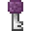
Purpur Key
End City Vault
Mở Vault thường đỉnh tháp End City · Tiêu hao khi mở
Tooltip: "Opens Vaults in End Cities". Dùng chuột phải vào khối Vault thường trên đỉnh các tháp End City để mở khóa, nhận Enderite Shard, Chorus Plating và vũ khí cấp cao (tiêu hao 1 chìa/lần mở).
Cách lấy: Trial Spawner End CityHoặc Thánh Hóa Consecration
Hạ Trial Spawner tại End CityhoặcThánh hóa Gilded Purpur Key dưới nước Shimmer
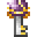
Gilded Purpur Key
Ominous Vault
Mở Ominous Vault End City · Chứa Khuôn Rèn Enderite
Tooltip: "Opens Ominous Vaults in End Cities". Phần thưởng khi vượt qua thử thách Ominous Trial Spawner. Dùng chuột phải để mở Ominous Vault, nguồn duy nhất chứa khuôn nâng cấp Enderite Upgrade Template.
Cách lấy: Ominous Trial End CityThử thách Điềm Họa
Kích hoạt & vượt qua Ominous Trial Spawner➜Mở Ominous Vault nhận Khuôn Rèn Enderite
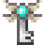
Winged Key
End Ship Elytra Vault
Mở Elytra Vault trên Tàu Bay · Câu cá Void 1.77%
Tooltip: "Opens the Elytra Vault on End Ships". Rơi từ lồng Trial Spawner trên Tàu Bay (End Ship) hoặc câu được từ Câu Cá Hư Không (1.77% Void Fishing). Dùng để mở khóa khoang chứa Cánh Cứng Elytra.
Cách lấy: End Ship & Câu Cá VoidMở khóa Elytra Vault
Hạ Trial Spawner trên Tàu Bay (End Ship)hoặc1.77% Câu cá Void tại Đảo Ngoài
Stronghold (Overworld)
Rộng Gấp 5 Lần
Stronghold ở Overworld rộng gấp 5 lần bản gốc, có thêm phòng Sculk Lab. Bên trong có Pillager, Illusioner (rơi cung cổ đại Sharanga tỉ lệ 9%–18%) và Evoker (rơi 3 sách phép Book of Conveyance, Light, Updraft tỉ lệ 15%–21%).
End Villages & Return Gateways
Làng Cư Dân End
Xuất hiện tại các vùng thảo nguyên và The Hallow. Giữa làng có Return Gateway giúp dịch chuyển một chiều quay về Đảo Chính. Dân làng End (Fletcher, Librarian, Armorer) bán Ancient Plating, Hallowed Ingot và đổi cung, nỏ, sách phép bằng Emerald hoặc Chồi Cây Sồi (Oak Sapling).
Chapel of Light
Bệ Thờ Thánh
Nằm trong quần xã The Hallow, bên trong đặt bệ thờ Altar of The Sacred. Người chơi có thể thả khoáng sản lên bệ thờ để nhận hiệu ứng buff, hoặc thả Starlight Soot / Pixie Dust để gọi Boss Empress of Light.
4. Các Cơ Chế Cốt Lõi, Bùa Chú Độc Quyền & Câu Cá Hư Không
1. Hệ thống Bệ Thờ Cổ Đại: Altar of The Accursed & Altar of The Sacred
Cursed & Sacred Altars
Stellarity sở hữu hệ thống hai bệ thờ tương phản đại diện cho hai thái cực quyền năng của The End:
Altar of The Accursed (Bệ Thờ Nguyền Rủa): Đặt tại trung tâm Dragon's Den, bệ thờ này kích hoạt vĩnh viễn sau khi Rồng Ender bị tiêu diệt lần đầu (lúc này thanh kiếm huyền thoại Dragonblade cắm sẵn trên bệ cho người đầu tiên rút ra). Đây là nơi rèn trang bị Netherite lên cấp Thần Thoại (Champion Armor, Shulker Gear, Hallowed Armor, Tamaris, Spectral Fury...). Từ bản v6.0.0, bệ thờ có thể nhặt được dạng khối trong Creative và tự động kiểm tra bật/tắt vật phẩm theo menu cấu hình.
Altar of The Sacred (Bệ Thờ Thánh Thiện): Bệ thờ thánh tích di động có thể đặt ở bất kỳ đâu. Người chơi có thể hiến tế khoáng sản quý (Sắt, Vàng, Kim Cương, Ngọc Lục Bảo, Netherite) để nhận những bùa ban phước (Blessing Buffs) lâu dài. Đồng thời, đây là bệ đài triệu hồi Empress of Light (khi thả Starlight Soot) và đại boss Shulking!
Cách rèn đồ: Bệ thờ không có giao diện GUI. Bạn đứng gần và ném (phím Q) đúng số lượng nguyên liệu lên mặt bệ đá (bán kính 1.5 block). Bệ thờ sẽ tự gom nguyên liệu và trả lại vật phẩm hoàn chỉnh.
Giữ nguyên bùa Enchant: Khi nâng cấp từ đồ gốc (Giáp Netherite, Kiếm Netherite, Cung, Khiên, Đinh Ba), toàn bộ dòng Enchantment trên món đồ cũ được giữ nguyên sang món đồ mới.
Nhuộm vệt sáng Elytra (Elytra Trail Dyeing): Ném 1x Elytra + 1x Thuốc nhuộm bất kỳ (16 màu) hoặc 1x Pháo Hoa / Ngôi Sao lên bệ thờ để gắn hiệu ứng hạt màu bay theo sau lưng khi lượn Elytra.
Mở từ xa bằng Satchel of Voids: Khi rèn được túi Satchel of Voids, bạn có thể dùng chức năng của bệ thờ ngay trong túi đồ mà không cần quay về Đảo Chính.
Cách dùng Vạc (Cauldron) chứa đầy nước để nấu thức ăn và pha thuốc của Stellarity:
Bước 1 (Tích điểm Breath): Ném bình Dragon's Breath (Hơi Thở Rồng) vào Vạc Nước để nạp điểm năng lượng Breath vào vạc (mỗi công thức tốn từ 1 đến 7 Breath).
Bước 2 (Thả nguyên liệu): Ném đủ các nguyên liệu của món ăn, thuốc hoặc khối đất End vào trong vạc.
Bước 3 (Nhận đồ): Vạc sẽ trừ điểm Breath và nảy vật phẩm hoàn chỉnh lên trên.
Các khối đổi nhanh trong vạc:1x End Stone + 1x Dirt = Ender Dirt (2 Breath); 1x End Stone + 1x Grass Block = Ender Grass Block (2 Breath); 1x Glass Bottle + 2x Lapis Lazuli = Experience Bottle (1 Breath).
3. Thánh Hóa Vật Phẩm Dưới Nước Shimmer The Hallow (Consecration)
Chuyển Hóa Tỉ Lệ 1:1 · Tương Đương Shimmer
Consecration (Thánh Hóa) là cơ chế ma thuật độc đáo trong Stellarity lấy cảm hứng từ dòng nước Shimmer của Terraria. Khi ném vật phẩm xuống vùng nước phát quang màu hồng tím của quần xã The Hallow (hoặc vạc nước được rải bột Starlight Soot), vật phẩm sẽ phát sáng rực rỡ (Glowing) và tự động chuyển hóa thành một vật phẩm tương ứng sau vài giây:
Quy tắc nhận biết: Nếu vật phẩm chìm xuống đáy nước mà không phát sáng, nghĩa là công thức đó không tồn tại hoặc không hợp lệ. Tuyệt đại đa số công thức tuân theo tỉ lệ quy đổi 1 : 1 (ném bao nhiêu nhận lại bấy nhiêu). Ký hiệu ⇌ biểu thị công thức chuyển hóa hai chiều có thể đổi qua lại vô hạn lần.
Nhóm Chuyển Hóa
Nguyên Liệu Ban Đầu (Input)
Thành Phẩm Thánh Hóa (Output)
Kim Loại & Khoáng Sản
Thỏi Sắt (Iron Ingot) Than Đá (Coal) Kem Dung Nham (Magma Cream) Túi Mực (Ink Sac) Khối Chất Nhờn (Slime Block) Hắc Diện Thạch (Obsidian) Khối Gạch Đất Sét (Brick) Cát Thường (Sand & Sandstone)
Bộ Giáp Sắt (Iron Armor Pieces) Gilded Purpur Key (Chìa khóa Mạ Vàng) Ominous Trial Key (Chìa Khóa Điềm Họa) Đồng Hồ (Clock) Đĩa Nhạc 5 Đĩa Nhạc 13 Creator Music Disc (Hộp nhạc Music Box)
➜Bộ Giáp Xích (Chainmail Armor) ➜Purpur Key Thường ➜Trial Key Thường ⇌La Bàn (Compass) ➜Đĩa Nhạc Relic ⇌Đĩa Nhạc Cat ⇌Đĩa Nhạc Creator Thường
Thực Vật & Sinh Học
Mọi loại Lá Cây (Any Tree Leaves) Các loại Gỗ Thường (Logs, Wood, Stripped) Hoa Wither (Wither Rose) Bụi Cây Khô (Dead Bush) Cây Đỗ Quyên (Azalea) Hoa Chorus (Chorus Flower) Bí Ngô (Pumpkin) Thịt Thối (Rotten Flesh) Vảy Rùa (Turtle Scute) Cầu Lửa (Fire Charge)
➜Lá Hoa Anh Đào (Cherry Leaves) ➜Gỗ Hoa Anh Đào (Cherry Log / Stripped / Wood) ➜Hoa Anh Túc Đỏ (Poppy) ➜Cánh Hoa Anh Đào Hồng (Pink Petals) ⇌Đỗ Quyên Nở Hoa (Flowering Azalea) ➜Hoa Bào Tử (Spore Blossom) ⇌Quả Dưa Hấu (Melon) ⇌Lông Gà (Feather) ⇌Vảy Tê Tê (Armadillo Scute) ⇌Đạn Gió Lốc (Wind Charge)
Cơ Khí & Ánh Sáng
Đuốc / Đèn Lồng / Lửa Trại Thường Đá Phát Sáng (Glowstone) Piston Dính (Sticky Piston) Máy Phân Phát (Dispenser) Cảm Biến Sculk Tinh Chỉnh (Calibrated) Khối Lan Truyền Sculk Catalyst Đá Thường (Stone) Đá Đen (Blackstone) Đèn Ếch Froglight (Vòng lặp)
4. Câu Cá Hư Không (Void Fishing) & Bảng Tỉ Lệ Rơi Chuẩn Wiki
Đảo Ngoài · Tăng Tim Vĩnh Viễn · Kho Báu Void
Câu Cá Hư Không (Void Fishing) là cơ chế câu cá độc quyền của Stellarity cho phép người chơi buông cần trực tiếp xuống vực thẳm The End để kéo lên các loài cá ma thuật, kho báu hiếm và tài nguyên quý:
Thời gian chờ cá cắn câu:
Vị Trí Hợp Lệ:Không thể câu ở Đảo Chính (Central Island) do cá Hư Không không dám bén mảng tới lãnh địa Rồng. Người chơi bắt buộc phải đi qua Cổng Cột Dịch Chuyển (End Gateway) ra các cụm Đảo Ngoài (Outer Islands).
Thời Gian Chờ Giật Cần: Khi phao ngừng rơi và các hạt hiệu ứng (particles) bắt đầu xuất hiện, người chơi cần đợi khoảng ngẫu nhiên từ 15 đến 45 giây để cá cắn câu.
Bùa Nhử Mồi (Lure): Mỗi cấp bùa Lure trừ 5 giây khỏi thời gian chờ tối đa.
Ưu Thế Cần Fisher of Voids: Cần câu chuyên dụng Fisher of Voids giảm 4 giây thời gian chờ tối thiểu và giảm 8 giây thời gian chờ tối đa.
1. Chiến lợi phẩm theo quần xã
Quần Xã Câu (Biome)
Loài Cá Đặc Trưng & Tỉ Lệ
Tài Nguyên Rơi Kèm & Tỉ Lệ
The Hallow (Thánh Địa)
Prismite (54.4%) Nấu Prismatic Sushi & Thuốc Vạc
Starlight Soot x2–4 (19.6%) Lá Hoa Anh Đào x2–5 (13.0%) Cánh Hoa Hồng Anh Đào x3–6 (13.0%)
Amethyst Forest
Amethyst Budfish (53.3%) Thức ăn hồi phục sinh lực
Quả Chorus x3–8 (23.5%) Hoa Chorus Flower x1–2 (17.6%) Mắt Ender Eye of Ender x1–2 (11.8%)
2. Chiến lợi phẩm ở mọi quần xã (cá chung, kho báu, phế liệu)
Nhóm Chiến Lợi Phẩm
Vật Phẩm Câu Được
Tỉ Lệ Rơi
Hiệu Ứng & Công Dụng
Cá Toàn Thể (Fish Pool)
Ender Koi (2–4 con) Crystal Heartfish *(Fish of Vitality)*
24.08% 6.42%
Ender Koi dùng để nấu Sushi và đun thuốc vạc.
Crystal Heartfish ăn vào tăng vĩnh viễn +1 Máu tối đa (+). Tối đa ăn 10 con để nhận trọn vẹn +10 Máu (+5 vĩnh viễn).
Kho Báu Quý (Treasure Pool)
Cần câu Fisher of Voids Sách Phép (Enchanted Book Lv 17–29) Sách phép (Enchanted Book Lv 30–40) Enderite Smithing Template Chìa Khóa Tàu Winged Key Họa Tiết Giáp Spire Armor Trim Họa Tiết Giáp Eye Armor Trim Tinh Thể End Crystal (1–2 / 2–3)
Các báu vật cao cấp nhất của thế giới The End. Cung cấp khuôn nâng cấp Enderite và chìa khóa mở khoang Elytra trên tàu bay mà không cần lùng sục mọi tòa tháp End City.
Phế Liệu & Tiện Ích (Junk Pool)
Màng Da Phantom (1–3) · Ngọc Ender (1–2)
Que End Rod (1–5) · Giấy Paper (1–3)
Quả Chorus Nổ Popped (2–5)
Crying Obsidian · Obsidian · End Stone · Purpur Block · Sao Pháo Hoa · Thuốc Nhuộm Tím / Đen
4.60% / món 4.60% / món 3.06% 1.53% / món
Các vật liệu xây dựng và tiện ích sinh tồn hỗ trợ nạp pháo hoa bay lượn và sửa chữa cánh rồng/phantom.
5. Các Tiện ích Sinh tồn (QoL) Khác của Stellarity
Cơ chế Phụ trợ
Totem of Undying cứu rơi Void: Cầm Totem trên tay khi rơi xuống đáy Void sẽ kích hoạt Totem, dịch chuyển bạn lên cao 200 blocks kèm hiệu ứng Rơi Chậm (Slow Falling) và Levitation ngắn để kịp bay vào đảo.
Đinh Ba Loyalty tự quay về từ Void: Đinh ba có bùa Loyalty khi ném xuống Void sẽ tự bay ngược về tay người ném.
Nhặt lại End Crystal: Đập chuột trái bình thường vào End Crystal sẽ làm nó rơi ra thành item. Muốn kích nổ thì phải giữ Shift + Chuột trái.
Eye of Ender tìm cổng Gateway: Ném Eye of Ender trong The End sẽ chỉ hướng tới cổng End Gateway gần nhất.
Respawn Anchor dùng được ở End: Có thể nạp Glowstone vào Respawn Anchor để đặt điểm hồi sinh ngay trong The End mà không nổ.
55 Đầu sưu tầm (Treasure Heads): Có 55 mẫu đầu người chơi/dev nằm trong rương End City (25%–66%) và Hòm Câu Cá.
Menu Cấu hình Datapack Dialog (v6.0.0+): Giao diện hộp thoại cài đặt trực quan truy cập từ menu chính. Cho phép bật/tắt độc lập từng món vũ khí, giáp, công cụ, cá, bùa chú; điều chỉnh lượng máu và nhạc vòng lặp của các Boss (Ender Dragon, Empress of Light, Shulking, Harvester Mini-boss).
Tính năng Item Granter trực quan: Người chơi có thể bấm chọn bất kỳ vật phẩm Stellarity nào trong menu để tự động chạy lệnh /loot nhận đồ ngay lập tức mà không cần gõ lệnh thủ công.
6. Hệ Thống 8 Bùa Chú Độc Quyền (Custom Enchantments) & Hiệu Ứng Mới
Bùa Chú v3.0.0+ / 1.21 · Cường Hóa Endgame
Stellarity bổ sung 8 bùa chú phù phép độc quyền phân bố tại rương Vault, di tích khảo cổ và trao đổi tại làng The End:
Tên Bùa Chú
Cấp Tối Đa & Loại
Hiệu Ứng & Tỉ Lệ Kích Hoạt
Cách Sở Hữu & Xung Đột
Critical Strike Chí Mạng / Bạo Kích
Cấp III (3) Kiếm & Rìu
Có 10% × Cấp tỉ lệ đòn đánh gây gấp đôi sát thương (Double Damage / x2 DMG). • Cấp 1: 10% · Cấp 2: 20% · Cấp 3: 30% chí mạng.
Mở từ Vault thường tại End City. Xung đột: Sharpness, Smite, Bane of Arthropods.
Void Strike Chém Hư Không
Cấp I (1) Mọi vũ khí cận chiến
Đòn đánh ghim hiệu ứng Voided I lên mục tiêu, giảm tạm thời 20% Máu tối đa của quái vật bị đánh trúng.
Mở từ Ominous Vault tại End City. Bùa kho báu (Dân làng không bán).
Void Shot Bắn Hư Không
Cấp I (1) Vũ khí tầm xa (Cung/Nỏ)
Mũi tên bắn trúng mục tiêu sẽ áp đặt hiệu ứng Voided I, cắt giảm tạm thời 20% Máu tối đa của quái vật.
Mở từ Ominous Vault tại End City. Bùa kho báu (Dân làng không bán).
Plated Bọc Giáp Elytra
Cấp IV (4) Cánh Cứng Elytra
Cung cấp 1 + Cấp Điểm Giáp (+2 đến +5 Giáp). Từ cấp III trở lên cộng thêm +1 Độ Cứng Giáp (Armor Toughness). Đánh đổi: Giảm (1 + Cấp × 3)% tầm lướt cánh.
Mở từ Elytra Vault trên Tàu Bay. Xung đột: Không thể ép chung với Soaring.
Soaring Lướt Gió Elytra
Cấp IV (4) Cánh Cứng Elytra
Tăng khoảng cách lướt xa của cánh thêm Cấp × 5% (+5% đến +20% khoảng cách bay ở cấp IV).
Mở từ Elytra Vault trên Tàu Bay. Xung đột: Không thể ép chung với Plated.
Levitation Shot Bắn Lơ Lửng
Cấp V (5) Cung (Bows)
Có 15% – 37.2% cơ hội biến mũi tên thành Mũi tên Bay Lơ Lửng, áp đặt hiệu ứng Levitation lên mục tiêu trong 4.5s – 9.0s.
Rương Vault End City & Bàn bùa chú. Hiệu quả để khống chế quái vật cận chiến.
Ambush Phục Kích / Đánh Lén
Cấp III (3) Kiếm & Rìu
Gây +50% Sát thương mỗi Cấp (+50% / +100% / +150% DMG) lên quái vật đang không nhắm mục tiêu vào bạn.
Dân làng thủ thư (Librarian) có bán sách này. Tối ưu cho lối đánh thâm nhập và bất ngờ.
Dune Speed Lướt Cát Sa Mạc
Cấp III (3) Giày (Boots)
Tăng mạnh tốc độ di chuyển khi chạy trên các khối: Cát thường, Cát đỏ, Sỏi, Cát/Sỏi nghi ngờ và Bột bê tông.
Khảo cổ cát nghi ngờ tại Di tích Sa Mạc (Desert Ruins). Xung đột: Soul Speed.
Hiệu ứng mới & bùa kỹ thuật (Technical Enchantments)
Hiệu ứng Voided (Nhiễm Hư Không): Áp đặt từ Void Strike, Void Shot và quái vật Void. Cắt giảm trực tiếp 20% Máu tối đa của thực thể bị trúng đòn.
Hiệu ứng Prismatic Inferno (Lửa Quang Phổ): Thiêu đốt liên tục, không thể dập bằng nước thông thường và khóa chặt khả năng tự hồi phục sinh lực.
Hiệu ứng Holy Flames (Lửa Thánh - Mới trong v6.0.0): Biến thể thiêu đốt thần thánh cực kỳ nguy hiểm xuất hiện khi cường hóa Kaleidoscope hoặc kết hợp Starstruck Shield với Radiant Jewel. Có khả năng gây sát thương thiêu rụi xuyên qua cả hiệu ứng Kháng Lửa (Fire Resistance)!
Bùa Kỹ Thuật Nội Bộ (Technical Enchantments): Stellarity sử dụng các bùa chú gán sẵn trên một số vũ khí để nhận diện cơ chế và chặn ép bùa xung đột: Daybroken (Kaleidoscope - chặn Fire Aspect), Draconic (Dragonblade - chặn Mending/Unbreaking), Infernal Infusion (Prismatic Punch/Prismember - chặn Fire Aspect/Flame), Mighty Wind (Sandstorm Trident - tích hợp sẵn Loyalty III), Soul Harvest (Harvester - ghi nhận điểm linh hồn).
5. Hệ Thống Boss & Sinh Vật: Cơ Chế Rồng Ender & Mobs The End
Cơ chế chiến đấu của Rồng Ender (Jean Rework), Empress of Light, các quái biến dị và sinh vật thuần hóa được trong Stellarity:
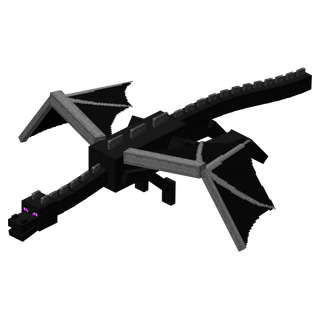
Upgraded Ender Dragon
300 HP · Giáp Nội Tại · Anti-Bed Cheese
Máu: 300 HP · Giáp: 12 Armor · Kháng Nổ Giường · Khiên Tinh Thể Miễn Nhiễm Sát Thương
Trận quyết chiến với Rồng Ender được đại tu hoàn toàn thành cuộc săn Boss đa tầng kịch tính. Rồng sở hữu giáp nội tại giảm mạnh sát thương nhận vào và được bảo hộ bởi khiên tinh thể năng lượng. Rồng bay lượn linh hoạt, liên tục sử dụng các kỹ năng ma thuật tầm xa và chỉ hạ cánh khi đã kiệt sức.
Các Pha Giao Tranh (Fight Phases)
Pha 1: Khiên Tinh ThểMiễn nhiễm 100% sát thương khi còn End Crystal
Pha 2: Không ChiếnBắn cầu hủy diệt, laser 360°, xả đạn Shulker
Ball of Blight: Chùm cầu axít tím vận tốc cao phát nổ diện rộng
Beam Thingy (Laser 360°): Quét tia năng lượng xoay quanh đảo trung tâm
Shulker Hell: Triệu hồi 6 - 8 con Shulker.
Chainfire & Roar: Tiếng gầm hơi thở rồng kèm chuỗi lửa thiêu đốt mặt đất
Chiến lợi phẩm & Tiến trình mở khóa (Post-Dragon Progression)Tỉ lệ rơi 100%
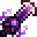
Dragonblade (Cắm trên Altar sau khi hạ Rồng lần đầu)+66% rơi Life Crystal (Hồi máu Regen IV khi đứng yên)+
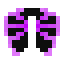
20% rơi Dragon Wings (Cánh Rồng)
Tiêu diệt Rồng kích hoạt vĩnh viễn bệ thờ Altar of The Accursed tại đài trung tâm và mở cổng Gateway Portal dịch chuyển ra các cụm đảo ngoài.
Empress of Light (Boss sau Rồng)
750 – 850 HP · 3 Biến Thể · Altar of The Sacred
Triệu hồi: Thả 1x Starlight Soot lên Altar of The Sacred · Phân nhánh 3 Biến thể: Night, Daytime & Radiant
Đại boss xuất hiện sau khi hạ Rồng Ender, triệu hồi tại thánh đường Chapel of Light (quần xã The Hallow). Sở hữu hệ thống giao tranh 2 giai đoạn (Phase 1 & Phase 2) với các chiêu thức lướt xuyên không, phi kiếm ánh sáng, đạn cầu năng lượng quang phổ và cơ chế tự cuộn kén hồi máu an toàn.
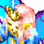
1. Dạng Ban Đêm / The End
750 HP
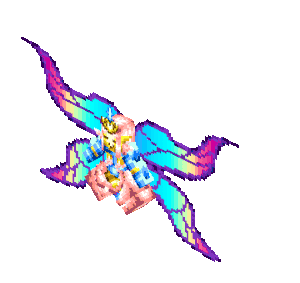
Máu tối đa750 HP (Mặc định)
Cách triệu hồiThả 1x Starlight Soot lên Altar vào ban đêm / The End
Cơ chế Kỹ năng & Giai đoạn giao tranh (Boss Attack Mechanics)Chu kỳ 2 Pha (Phase 1 & Phase 2)
• Dash (Lướt Xuyên Không): Empress quay mặt về phía người chơi và dịch chuyển xuyên không 22.5 blocks trong 15 ticks. Ở Phase 2 lướt liên hoàn nhiều lần.
• Ethereal Lance (Phi Kiếm Ánh Sáng): Triệu hồi 20 thanh kiếm xung quanh người chơi và phóng lao sau 1.3 giây. Dạng 2 tạo các đợt kiếm song song; Dạng 3 (Daytime/Radiant) bắn úp sọt từ phía sau lưng.
• Prismatic Bolts (Đạn Cầu Tầm Nhiệt): Bắn 20 tia đạn bám đuổi mục tiêu. Dạng 2 bắn thành vòng tròn xoáy và gây hiệu ứng bỏng lửa Prismatic Inferno.
• Teleport & Heal (Né Đòn & Kén Hồi Máu): Liên tục dịch chuyển chớp nhoáng vòng quanh người chơi giữa các đòn đánh. Tại Phase 2, Empress có thể cuộn tròn thành quả cầu trong 3 giây để hồi máu an toàn, hoàn toàn miễn nhiễm sát thương (tối đa 3 lần trong toàn trận).
Tin nhắn trạng thái khi triệu hồi Boss sẽ đổi mã màu tương ứng theo từng biến thể (Tím Night / Vàng Daytime / Hoàng Kim Radiant).
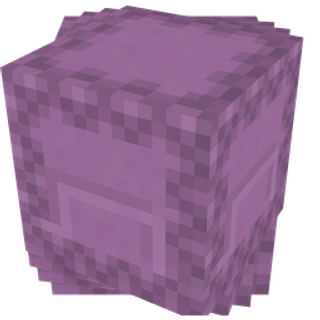
Shulking (Vua Shulk)
Boss Pháo Đài End City · Bossbar Riêng
Máu cấu hình (Configurable) · Triệu hồi tại Altar of The Sacred hoặc End Ship · Khả năng phá hủy khối block
Chúa tể Shulker tối cao ngự trị tại đỉnh các pháo đài End City hoặc được triệu hồi trực tiếp qua tế đàn Altar of The Sacred. Sở hữu thanh máu Bossbar chuyên biệt và bộ chiêu thức kiểm soát không gian cực kỳ hiểm ác:
Phá Hủy Khối Block (Block Breaking): Nghiền nát các khối gạch Purpur và End Stone xung quanh để triệt tiêu hoàn toàn chiến thuật dựng tường ẩn nấp của người chơi.
Chuyển Hướng Đạn (Redirect Bullets): Cưỡng chế xoay toàn bộ đạn Shulker trong khu vực tập trung lao thẳng vào mục tiêu.
Gai Nhọn Trồi Đất (Shulking Spikes): Phóng ra những hàng chông nhọn trồi từ mặt sàn đâm xuyên giáp.
Tia Quét Laser (Ray Beam): Bắn chùm tia năng lượng hủy diệt tầm xa càn quét địa hình.
Triệu Hồi Tay Sai: Triệu tập Shulker Cảm Tử (Explosive Shulker) phát nổ diện rộng và Shulkhead Skeleton (Bộ xương đội vỏ Shulker).
PHẦN THƯỞNG CHIẾN THẮNG
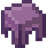
8-16
+
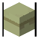
+
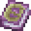
Cung cấp nguyên liệu chế tạo Bộ Giáp Shulker, Công cụ Shulker và món bánh mặn Shepherd's Pie.
Quái Vật Biến Dị & Kẻ Địch Nguy Hiểm Tại The End
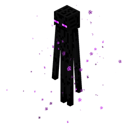
Enderman (Đại Tu Cơ Chế)
Xuyên Giáp Khi Không Khiên
Máu: 40 HP · Sát thương: 7–10 · Tốc độ dịch chuyển x1.5
Enderman trong Stellarity di chuyển và dịch chuyển tức thời nhanh hơn nhiều lần. Đặc biệt, nếu người chơi không cầm khiên chắn, nhát cào của Enderman sẽ kích hoạt thuộc tính xuyên thấu giáp gây sát thương trực tiếp vào thanh máu (). Rơi thịt Enderman Flesh (nguyên liệu nấu nướng).
Xuất hiện: Khắp các quần xã The EndQuái Phổ Biến
Ender Pearl (Ngọc Ender)+Enderman Flesh (Thịt Enderman)
Có thể đem thịt nướng với Bột Quỷ Lửa Blaze Powder để chế biến món ăn trong Vạc.
Shulker (Quái Vỏ Cứng End City)
Đạn Bay Lơ Lửng Dày Đặc
Máu: 30 HP · Giáp: 20 (khi đóng vỏ) · Hiệu ứng: Levitation
Trấn giữ các tháp Trial End City. Shulker bắn các chùm đạn xoắn ốc truy kích dày đặc. Bị trúng đạn khiến người chơi bay lơ lửng lên không trung (rất nguy hiểm khi ở gần mép vực Void). Khi bị tiêu diệt bằng vũ khí có bùa Looting, Shulker có cơ hội rơi Shulker Body (dùng nấu Shepherd's Pie).
Xuất hiện: End City & Trial TowerVật Liệu Chế Tạo
Shulker Shell (Vỏ Shulker)+Shulker Body (Thân Shulker - Looting)
Dùng Shulker Shell để chế tạo Shulker Box và rèn bộ giáp Shulker Armor.
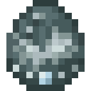
Frosted Stray & Harvester
Đợi ảnh chính thức
Máu: 20–80 HP · Sát thương: Băng giá làm chậm · Cầm đao Harvester
Xuất hiện tại các dải đồi tuyết Frosted Hills và Frozen Spikes. Quái Stray đội mũ Kim Cương có 3% tỉ lệ cầm đao Frigid Harvester (khi hạ gục chắc chắn rơi đao). Ngoài ra tại các đới băng giá sâu thẳm còn xuất hiện Harvester Mini-Boss to lớn với hào quang tuyết làm chậm diện rộng.
Xuất hiện: Frosted Hills & Frozen SpikesMini-Boss / Rơi Hiếm
Mũ Kim Cương (Bảo vệ IV)+3% Đao Frigid Harvester
Hạ gục Harvester Mini-Boss tăng +78 điểm linh hồn trực tiếp cho đao Harvester.
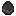
Voided Zombie
Trứng sinh Stellarity
Máu: 30 HP · Hiệu ứng: Jinx (Giảm Giáp) & Rút Máu
Xác sống bị năng lượng Hư Không The End biến dị phóng xạ. Tốc độ di chuyển và cự ly đuổi bắt xa hơn zombie Overworld. Đòn tấn công gây hiệu ứng Jinx (bào mòn chỉ số giáp và độ cứng giáp của nạn nhân) và rút máu liên tục. Thường đi theo bầy canh giữ các phế tích.
Xuất hiện: Đảo Ngoài The End & Tàn TíchQuái Đột Biến
Thịt Thối Nhiễm Xạ+Quặng End
Nên tiêu diệt từ xa bằng Cung Sharanga / Spectral Fury để tránh bị dính bùa giảm giáp Jinx.
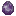
Voided Skeleton
Trứng sinh Stellarity
Máu: 30 HP · Cầm Cung Call of The Void (0.04% – 4% rơi) · Mũi tên Hư Không
Cốt đột biến Hư Không xuất hiện tại các quần xã Void và phế tích. Luôn sinh ra với cây cung Call of The Void trên tay, bắn ra những mũi tên Hư Không trừ thẳng vào máu tối đa của người chơi và vỡ vụn gây sát thương nổ văng diện rộng.
Xuất hiện: Quần xã Void & End CityXạ Thủ Hư Không
Xương Quái Void+Cung Call of The Void (Tỉ lệ rơi 0.04%–4%)
Sử dụng Khiên Crest of The End hoặc nấp sau tường chắn để áp sát tiêu diệt.
Voided Slime
Trứng sinh Stellarity
Máu: Đa tầng kích cỡ · Địa bàn: End City & Quần xã Void · Phân tách bầy đàn
Khối chất nhờn tím đậm phát quang ngưng tụ từ vật chất Hư Không đen tuyền. Nhảy nhót và dậm mạnh lên người chơi. Khi bị tiêu diệt, Voided Slime sẽ phân tách thành nhiều khối nhỏ hơn gây áp lực bầy đàn khó chịu trong các không gian hẹp.
Xuất hiện: Đầm lầy Void & Tháp End CityChất Nhờn Hư Không
Rơi Slime Ball Hư Không & Kinh nghiệm
Dùng đòn quét của Dragonblade hoặc quét kiếm để tiêu diệt các khối slime con tức thì.
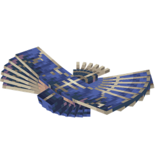
Phantom (Bóng Ma Tuần Tra Void)
Đợi ảnh chính thức
Máu: 20 HP · Tốc độ lượn: Cực nhanh · Sát thương hất văng
Tuần tra tại các tầng không gian cao phía trên quần xã Shadowlands và các hố sâu ranh giới Void. Lao xuống tấn công bất ngờ với tốc độ xé gió, hất văng người chơi đang lượn cánh Elytra làm mất thăng bằng rơi xuống vực thẳm. Rơi màng cánh Phantom Membrane để sửa Elytra.
Xuất hiện: Tầng Cao Không Gian Void & ShadowlandsKẻ Đi Săn Bầu Trời
Phantom Membrane (Màng Cánh Phantom)
Mang theo Mèo End hoặc ép bùa gió để đẩy lùi đòn lao bổ nhào của Phantom.
Voided Silverfish (Cá Bạc End)
Trứng sinh Stellarity
Máu: 8 HP · Kích thước: Siêu nhỏ · Bầy đàn đông đúc
Cá bạc sinh ra khi người chơi hoặc quái vật dính hiệu ứng môi trường Infestation (mỗi đòn đánh trúng có tỉ lệ sinh ra 1–3 con dưới chân). Cá bạc tấn công liên tục làm gián đoạn nhịp đánh và không rơi kinh nghiệm (0 EXP) để chống treo máy AFK.
Xuất hiện: Đảo The End (Hiệu ứng Infestation)Côn Trùng Hư Không
Không rơi kinh nghiệm (0 EXP)
Sử dụng đòn quét diện rộng của Dragonblade hoặc lửa càn quét để tiêu diệt bầy cá bạc nhanh gọn.
Động Vật Đồng Hành & Tinh Linh Thuần Hóa Tại The End
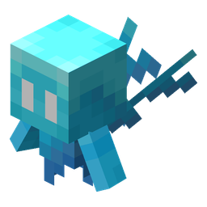
Pixie (Tinh Linh Ánh Sáng)
Đợi ảnh chính thức
Máu: 10 HP · Quần xã: The Hallow · 5 Sắc tố phát quang
Tinh linh cổ tích phát sáng lấp lánh bay lượn trên thảm cỏ phấn hoa quần xã The Hallow (gồm các biến thể màu xanh lơ, xanh chanh, hồng thược dược, vàng kim và rực rỡ). Có thể bắt Pixie vào bình thủy tinh để tạo thành khối đèn trang trí Pixie in a Jar hoặc hạ gục để thu thập Starlight Soot.
Xuất hiện: Quần xã The HallowTinh Linh Cổ Tích
Starlight Soot (Bột Tinh Tú Triệu Hồi Boss)
Dùng bình thủy tinh rỗng nhấp chuột phải vào Pixie để đóng lọ làm đèn phát sáng trang trí căn cứ.
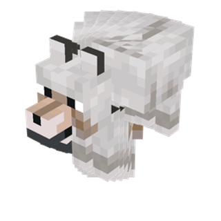
Ender Wolf (Sói End Tím Thuần Hóa)
Đợi ảnh chính thức
Máu: 40 HP (khi thuần hóa) · Sát thương: 8 · Kháng một phần sát thương Void
Loài sói bản địa của The End với đôi mắt tím phát quang và bộ lông xám thạch anh. Có thể thuần hóa bằng Xương quái Void. Sau khi thuần hóa, Ender Wolf tấn công quái vật bảo vệ chủ nhân và không bị đẩy lùi trước tiếng gầm của Rồng.
Thuần hóa: Dùng Xương quái vật The EndThú Cưng Đồng Hành
Thú Cưng Bảo Vệ Trung Thành
Mắt của sói Ender Wolf tự phát sáng xuyên bóng tối, giúp phát hiện quái vật từ khoảng cách xa.
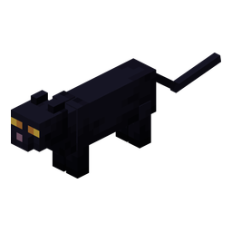
Ender Cat (Mèo End Xua Đuổi Quái)
Đợi ảnh chính thức
Máu: 20 HP · Thuần hóa bằng cá Ender Koi hoặc Frost Minnow
Giống mèo quý tộc sinh sống quanh các làng bản End. Bộ lông đen tuyền ánh tím huyền bí. Tiếng kêu của mèo Ender Cat khiến Phantom và Creeper kinh hãi bỏ chạy trong phạm vi 16 blocks, là bạn đồng hành tuyệt vời giữ cho người chơi không bị tập kích khi đang xây cầu qua vực Void.
Thuần hóa: Dùng cá Ender Koi câu từ VoidHộ Vệ Xua Đuổi Quái
Cá Ender Koi / Frost Minnow
Đặt mèo Ender Cat ngồi tại các trạm dịch chuyển để ngăn chặn triệt để Phantom quấy rối.
Flesh Piglin (Piglin Lạc Lối)
Trứng sinh Stellarity
Máu: 32 HP · Vũ khí: Kiếm vàng & Nỏ · Rơi vàng End
Dấu tích của những đoàn thám hiểm Piglin từ Nether từng bước chân đến chiều không gian End từ thời cổ đại. Cơ thể bị biến dị thích nghi với không khí thiếu dưỡng khí. Xuất hiện tại các tiền đồn phế tích, có thể giao dịch đổi một số khoáng vật End hiếm lấy thỏi vàng nguyên chất.
Xuất hiện: Tiền đồn phế tích Nether cổ tại EndChiến Binh Lạc Lối
Phôi Vàng & Mảnh Kim Loại End
Trang bị một món đồ vàng trên người sẽ giúp tránh bị Flesh Piglin chủ động tấn công.
6. Khung Vật Phẩm & Công Thức Chế Tạo: Giáp, Cánh Elytra & Phôi Rèn
Hình ảnh Sprite gốc phóng to, chỉ số thuộc tính và công thức rèn tại Altar of The Accursed và Bàn chế tạo, được phân định riêng biệt giữa 4 Bộ Giáp Chiến Đấu, Các Loại Phôi Rèn / Nguyên Liệu Nâng Cấp và 3 Mẫu Cánh Elytra Độc Quyền:
Set Bonus (Holy Protection): Sau 20s tích tụ, đòn sát thương tiếp theo đánh trúng bạn sẽ bị hủy hoàn toàn về 0, đồng thời bạn miễn nhiễm sát thương và đẩy lùi trong 5 giây kế tiếp (Hồi chiêu 16–22s).
Nơi rèn: Altar of The AccursedTừng món
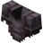
+
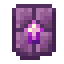
+4
Giữ nguyên toàn bộ bùa phù phép từ giáp Netherite ban đầu.
Set Bonus: Giảm 20% mọi sát thương nhận vào (Resistance I vĩnh viễn), miễn nhiễm Bay Lơ Lửng (Levitation) và Khô Héo (Wither). Khi bị đánh có 33% tỉ lệ bắn 3 viên đạn Shulker đuổi theo kẻ tấn công.
Nơi rèn: Altar of The AccursedTừng món
++4
Công thức này cũng dùng để nâng cấp bộ công cụ và vũ khí Shulker.
Champion Armor
Cộng Dồn Sát Thương
Giáp: 20 · Độ cứng: 12 · +15% Tốc đánh · +10% Sát thương
Set Bonus (Wrath of The Ancients): Mỗi đòn chém trúng đích tăng +5% sát thương cho đòn tiếp theo, cộng dồn tối đa 5 lần (+25% sát thương, cộng với 10% sẵn có là +35% sát thương).
Nơi rèn: Altar of The AccursedTừng món
++4
Cộng dồn trực tiếp với chỉ số +12% sát thương của quả Duskberry.
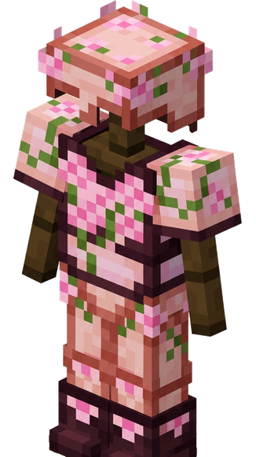
Floral Armor
Chuyên Xạ Thủ & Tốc Chạy
Giáp: 20 · Độ cứng: 12 · Tăng tốc độ tên & Sát thương tầm xa
Set Bonus (Floral Bloom): Bộ giáp cho người dùng cung nỏ, rèn từ Gỗ và Lá Anh Đào. Tăng sức sát thương và vận tốc của cung nỏ, tạo hiệu ứng hoa nở Bloom khi bắn trúng quái, để lại vệt hoa đào khi chạy và ngụy trang tàng hình trong các khối hoa lá.
Nơi rèn: Altar of The Accursed4 Món (Mũ / Áo / Quần / Giày)
++8
Mỗi món rèn độc lập và bảo lưu 100% bùa phù phép bảo vệ gốc.
Nhóm 2: Nguyên liệu chế tạo độc quyền (Stellarity Materials)
Nguyên liệu rèn Giáp Champion, Sách Phép & Nấu Vạc
Phôi hợp kim giữa Thỏi Sắt và Quả Chorus nổ (Popped Chorus Fruit). Dùng làm vật liệu bắt buộc để rèn bộ giáp Champion (4x/món), sách phép Book of Jinx (8x) và pha thuốc Endurance trong Vạc Hơi Thở Rồng.
Nơi chế tạo: Bàn Chế Tạo (Crafting Table)Tỉ lệ 1 ra 1
+2➜
Cũng có thể thu thập khi dùng Purpur Key mở rương Vault tại End City.
Hallowed Ingot
Thỏi Kim Loại Thánh
Nguyên liệu rèn Hallowed Armor, Kaleidoscope & Prismember
Thỏi kim loại phát ánh sáng hồng tím. Nhận được qua câu cá Void, mở rương End City, đổi từ dân làng Armorer (12 Emerald = 4 thỏi) hoặc thanh tẩy trực tiếp từ Khối Sắt.
Cách lấy: Nước Hồng Tím The Hallow1 Khối đổi 2 Thỏi
thả xuống nước Shimmer➜2
Hoặc thả vào Vạc Nước đã hòa tan bột Starlight Soot.
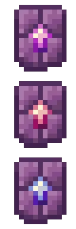
Enderite Upgrade Template
Khuôn Rèn End
Nguyên liệu bắt buộc để nâng cấp mọi trang bị End
Mở từ rương Ominous Vault trong End City bằng chìa khóa Gilded Purpur Key. Dùng tại bệ thờ Altar of The Accursed để nâng cấp đồ Netherite lên trang bị End.
Nơi nhân bản: Altar of The Accursed1 ra 2 khuôn
+9+
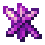
5
Nên chừa lại ít nhất 1 khuôn trong rương để nhân bản tiếp.
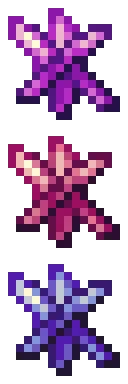
Enderite Shard
Mảnh Kim Loại Hư Không
Nguyên liệu nhân bản khuôn & rèn Tamaris
Mảnh khoáng thạch màu tím đậm rơi từ rương Vault End City, đào từ quặng sâu hoặc rơi từ các sinh vật Voided trong Trial End City.
Cách kiếm: Đào End Stone (2%) & VaultsTiền tệ End Villagers
Đào End Stone (2% rơi)hoặcMở Vaults / Rương Ngục End
Tooltip: "Contains a fraction of the unknown". Dùng để nhân bản Khuôn Enderite, rèn vũ khí và giao dịch với Dân Làng End.
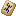
Sand Rune
Cổ Thư Sa Mạc
Rương di tích Endless Dunes · Nguyên liệu rèn Sandstorm Trident
Phiến cổ thư khắc hoa văn bão cát cổ xưa, chỉ có thể tìm thấy bên trong các rương kho báu thuộc cấu trúc di tích tại quần xã Endless Dunes.
Nơi tìm thấy: Rương Di Tích Endless DunesCông dụng: Rèn Đinh Ba Gió
Khám phá di tích kim tự tháp Endless Dunes➜Rèn Sandstorm Trident tại Altar of The Accursed
Vật phẩm duy nhất dùng để kích hoạt quyền năng tạo luồng gió lướt Slipstream của đinh ba.
Starlight Soot
Bồ Hóng Tinh Tú
Rơi 0-4 từ Tiểu Tiên (Pixie) · Hiến tế triệu hồi Empress of Light
Bụi tinh tú rực rỡ rơi ra từ các chú Tiểu Tiên (Pixie) hoặc trên các Tàu Bay End Ship sinh ra tại quần xã The Hallow. Dùng thay thế Bột Đá Sáng trong chế tạo, dùng trong các bài thuốc vạc Hơi Thở Rồng và hiến tế triệu hồi Boss Empress of Light.
Nguồn thu thập: Rơi từ Pixie (0-4)Triệu hồi Boss Empress of Light
Tiêu diệt Tiểu Tiên (Pixie) tại The Hallow➜Thả lên Altar of The Sacred để triệu hồi Boss
Tooltip: "May contain fairy". Khi cầm kèm Kaleidoscope ở tay phụ sẽ đánh thức biến thể Radiant Empress of Light!
Đôi cánh bóng ma sơ khai cho giai đoạn trước khi hạ Rồng Ender. Giúp người chơi lướt nhanh ở cự ly ngắn, giảm 30% sát thương khi va chạm đất và tăng 8 ô khoảng cách tiếp đất an toàn. Sửa chữa bằng Màng da Phantom (Phantom Membrane).
Cách lấy: Săn Quái PhantomTỉ lệ rơi 3% – 15%
Hạ gục Phantom trên bầu trời đêm
Tooltip: "They leave a lot to wish for...". Thích hợp để thám hiểm địa hình đồi núi trước khi có Elytra chuẩn.
Dragon Wings
Post-Dragon · Độ Bền 648
Giáp: +3 · Độ cứng: +2 · Tốc chạy/bay: -8% · Giảm 60% DMG khi Lướt
Đôi cánh đúc từ vảy rồng kiên cố. Cung cấp 3 điểm giáp, 2 độ cứng giáp và giảm 60% sát thương nhận vào trong khi đang lướt cánh (Gliding), đổi lại giảm 8% tốc độ di chuyển. Sửa chữa bằng Phantom Membrane.
Cách lấy: Hạ Gục Rồng EnderTỉ lệ rơi 20%
20% Rơi từ Boss Rồng Ender (Jean)
Tooltip: "Sturdy scales provide decent protection, at the cost of flight speed". Lựa chọn phòng ngự không chiến số 1.
Wiki ghi đây là mẫu Elytra tốt nhất: +10% tốc độ, -35% trọng lực và để lại vệt cầu vồng khi bay. Sửa bằng Phantom Membrane.
Cách lấy: Boss Empress of Light10% (Ban Đêm) · 50% (Ban Ngày) · 100% (Radiant)
Đêm: 10-20% · Ngày: 50% · Radiant: 100% Rơi
Tooltip: "Delicate wings provide excellent flight speed and agility... Yes, their flight trail is rainbow".
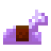
Reinforced Horse Armor
Bảo Hộ Chiến Mã
Giáp chiến mã siêu cấp · Chống chịu va đập · Kháng sát thương The End
Bộ giáp ngựa kiên cố được gia cố bằng hợp kim Chorus và vảy rồng The End. Cung cấp chỉ số phòng thủ cao, giúp chiến mã sống sót trước các đòn tấn công của quái vật Outer End.
NƠI RÈN: ALTAR OF THE ACCURSED
+
4
+
Bảo hộ tối đa cho chiến mã khi đồng hành trong các cuộc viễn chinh The End.
7. Khung Vật Phẩm & Công Thức Chế Tạo: Vũ Khí & Công Cụ Độc Quyền
Toàn bộ 15 vũ khí chiến đấu và bộ công cụ độc quyền trong phiên bản Stellarity mới nhất, bao gồm đại kiếm, song dao linh hồn, đại đao gặt linh hồn, lưỡi hái, vũ khí thánh quang từ Empress of Light và bộ công cụ Shulker Haste I:
Đại kiếm huyền thoại của The End. Đòn đánh thứ 3 liên tiếp tung ra một cú đấm quyền năng (Otherworldly Punch) gây sát thương cực lớn với độ xuyên giáp cao, hất văng mục tiêu ra xa và làm choáng tạm thời. Bùa Knockback gia tăng mạnh mẽ khoảng cách hất văng.
Cách lấy: Altar of The AccursedRơi duy nhất 1 lần
Cắm sẵn trên Bệ thờ Altar of The Accursed sau khi Rồng Ender bị tiêu diệt lần đầu tiên
Mỗi thế giới chỉ sinh ra duy nhất 1 thanh Dragonblade.
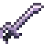
Tamaris
Dịch Chuyển Kết Liễu 10m
Sát thương: 7 (3.5 tim) · Tốc đánh: 1.6 · Độ bền: 1561 · Sửa bằng Netherite Ingot
Khi kẻ địch còn dưới 25% máu, một dấu ấn màu xám sẽ hiện lên trên đầu mục tiêu. Nhấn Shift để dịch chuyển tức thời tới mục tiêu trong phạm vi 10m và kết liễu ngay lập tức.
Nơi rèn: Altar of The AccursedVũ khí kết liễu
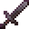
++8+
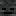
Mục tiêu có Totem hoặc Holy Protection sẽ kích hoạt thời gian hồi chiêu kết liễu 11 giây.
Đại đao gặt linh hồn của The End. Hạ gục quái vật để tích lũy linh hồn, gia tăng vĩnh viễn sát thương từ 4 lên tối đa 16. Mỗi thanh Harvester có thể nhận tối đa 3 Kỹ Năng Linh Hồn khi tiêu diệt các quái vật tương ứng. Đạt Tier 4 kiếm trở nên không thể phá hủy (Unbreakable). Không thể ép bùa Sharpness hoặc Fire Aspect.
Rơi 100% khi hạ gục Stray cầm Harvester (1% tỉ lệ xuất hiện ở các đới băng tuyết The End, trang bị giáp Kim Cương)
Sửa độ bền trên Đe bằng Blue Ice (Băng Xanh) khi chưa đạt Tier 4.
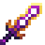
The Beginning and The End
Cặp Song Dao Linh Hồn
Sát thương: 5 (2.5 tim) · Tốc đánh: 2.0 · Độ bền: 496 · Sửa bằng Netherite Ingot
Cặp song dao huyền thoại gồm The Beginning và The End. Khi tấn công, dao thu hút các Linh Hồn (Spirits) xuất hiện quanh chiến trường. Khi cầm cả 2 thanh trên 2 tay và nhìn vào Linh Hồn, bạn sẽ dịch chuyển tức thời tới Linh Hồn đó, gây sát thương diện rộng xuyên giáp và nhận buff tăng sát thương ngắn hạn. Cầm The Beginning ở tay phụ tăng +1 DMG; cầm The End ở tay phụ tăng +5% tốc chạy.
Cách lấy: Ominous Vaults (End City)Cặp song dao
Mở từ Ominous Vault tại End City bằng Gilded Purpur Key
Cấp bùa Phù Phép của cả 2 thanh dao sẽ cộng hưởng cùng nhau khi chiến đấu.
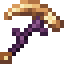
Starless Scythe
Chém Quét Diện Rộng · Hút Máu 5%
Sát thương: 10 (5 tim) · Tốc đánh: 0.9 · Độ bền: 1232 · Sửa bằng Netherite Ingot
Lưỡi hái Hư Không thực hiện các đòn chém quét diện rộng gây 60% sát thương lan lên mọi quái xung quanh. Mỗi đòn đánh trúng sẽ hút máu bằng 5% lượng sát thương gây ra để hồi phục cho người chơi. Có thể ép bùa của Cuốc (Hoe): Efficiency làm què quặt đối thủ, Fortune tăng thêm +2% hồi máu mỗi cấp bùa.
Cách lấy: Ominous Vaults (End City)Lưỡi hái hút máu
Mở từ Ominous Vault tại End City bằng Gilded Purpur Key
Vũ khí kiểm soát đám đông và duy trì sinh lực tốt nhất khi bị bao vây.
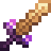
Stellar Striker
Bắn Sao Xuyên 50% Giáp
Sát thương: 10 (5 tim) · Tốc đánh: 0.9 · Độ bền: 2031 · Sửa bằng Netherite Ingot
Thanh kiếm tự động tích lũy các ngôi sao theo thời gian (0.6%/s, đánh trúng quái +2%, giết quái +3%). Khi đạt các mốc 10%, 20%, 45%, 70%, 100%, kiếm sẽ tích trữ được 1 ngôi sao (tối đa 5 sao). Khi **giữ Shift + tấn công**, toàn bộ sao tích lũy sẽ được phóng về phía trước tự tìm quái, mỗi sao gây **9 sát thương (6 sát thương nổ) với 50% xuyên giáp**.
Cách lấy: Thợ Rèn Vũ Khí MasterEnd Village Trader
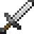
+64
Sau khi phóng sao, kiếm sẽ tạm ngưng tích tụ năng lượng trong 6 giây.
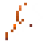
Kaleidoscope
Năng Lượng Mặt Trời · Unbreakable
Sát thương: 10 cơ bản (Xả đòn 3.3 – 30) · Tốc đánh: 0.8 · Độ bền: Bất tử (Unbreakable)
Đại rìu năng lượng mặt trời. Khi cầm trên tay chính, rìu tự động tích tụ năng lượng ánh dương từ 0 đến 100 trong 7.5 giây. Khi mức tích lũy trên 33, đòn chém tiếp theo sẽ **xả toàn bộ năng lượng thành vụ nổ ánh sáng cực mạnh** gây tới 30 sát thương (70% sát thương nổ lan) và thiêu đốt mọi kẻ địch xung quanh.
Cách lấy: Boss Empress of Light (Ban Ngày)100% Rơi từ Boss
Hạ gục Empress of Light tại Overworld vào Ban Ngày (Enraged Mode)
Kiếm không thể bị phá hủy, có thể dung hợp với sách phù phép trên Đe.
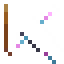
Prismatic Punch
Đạn Nổ Prismatic Inferno
Sát thương: 7 – 11 · Độ bền: 365 · Tốc độ đạn 120 block/s
Nỏ quang phổ chuyển đổi mọi mũi tên nạp vào thành luồng đạn **Prismatic Blast** gia tốc cực nhanh lên 120 block/s, bay theo đường thẳng tuyệt đối không chịu trọng lực. Khi chạm mục tiêu sẽ phát nổ diện rộng và đốt cháy hiệu ứng **Prismatic Inferno** trong 6 giây. Bùa Multishot tăng gấp đôi kích thước nổ và nâng sát thương lên 13.
Cách lấy: Boss Empress of LightTỉ lệ rơi 50%
Hạ gục Empress of Light tại The End hoặc vào Ban Đêm
Vụ nổ quang phổ gây sát thương lớn lên quái vật nhưng không phá hủy khối block.
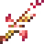
Prismember
Xoay Kiếm 360° · Xuyên 30% Giáp
Sát thương: 8 (4 tim) · Tốc đánh: 1.6 · Độ bền: 2031 · Sửa bằng Netherite Ingot
Thanh bảo kiếm quang phổ rực lửa rơi từ Empress of Light. Khi ngồi cúi người (Shift) trong 0.4 giây, thanh kiếm tích đầy năng lượng lửa. Tấn công để kích hoạt **cú chém xoay tròn 360 độ**, gây 8 sát thương với **30% xuyên giáp** và thiêu đốt mọi kẻ địch xung quanh bằng **Prismatic Inferno** trong 3 giây (+1s/cấp Fire Aspect). Hồi chiêu: 1 giây.
Cách lấy: Boss Empress of LightTỉ lệ rơi 25%
Rơi từ Empress of Light khi hạ gục ở The End hoặc Ban Đêm
Vũ khí cận chiến cơ động và phá giáp hiệu quả bậc nhất của The Hallow.
Chuột phải để **ném búa bay lượn trên không trung tới 40 block**, gây 15 sát thương xuyên qua các vật thể và khối block lên mọi kẻ địch trên đường bay trước khi tự động quay ngược lại tay người chơi. Kỹ năng ném búa không có thời gian hồi chiêu.
Cách lấy: Boss Empress of LightTỉ lệ rơi 30%
Rơi từ Boss Empress of Light khi bị đánh bại
Đặc biệt hiệu quả để tấn công kẻ địch ẩn nấp sau chướng ngại vật hoặc góc khuất.
Sharanga
Mũi Tên Không Trọng Lực
Sát thương: 6.5 – 11 · Độ bền: 385 · 25% Giữ lại mũi tên
Cung cổ đại của The End. Chuyển đổi mọi mũi tên phát quang (Spectral Arrow) thành **Spectral Bolts bay siêu tốc, bay thẳng tắp không bị trọng lực kéo xuống**. 25% cơ hội không tiêu hao mũi tên khi bắn (tăng lên 50% nếu có bùa Infinity).
Cách lấy: Stronghold & Làng EndCung cổ đại
Rơi từ Illusioner trong Stronghold (9%–18%)hoặcĐổi 64 Emerald tại Fletcher làng End
Là vũ khí nền tảng để nâng cấp lên Cung Linh Hồn Spectral Fury.
Spectral Fury
Đom Đóm Linh Hồn Tự Tìm Quái
Sát thương: 8 – 12.5 · Độ bền: 636 · Sửa bằng Cung thông thường
Cung linh hồn nâng cấp từ Sharanga. Khi bắn bằng Spectral Arrow và kéo căng cung trên 1.5 giây, phát bắn tạo ra một đom đóm linh hồn Wisp. Wisp tồn tại trong 7 giây, tự động truy đuổi quái vật trong phạm vi 16m và xuyên qua tối đa 3 kẻ địch liên tiếp. 25% cơ hội giữ lại mũi tên.
Nơi rèn: Altar of The AccursedCung linh hồn
++3+
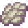
8
Wisp có cơ chế tự định tuyến thông minh, ưu tiên luân chuyển giữa các mục tiêu gần nhau.
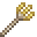
Sandstorm Trident
Đường Hầm Gió Slipstream
Đinh ba bão cát cường hóa · Triệu hồi luồng gió xoáy lốc
Khi phóng đinh ba, đường bay tạo ra một đường hầm gió lốc xoáy (Slipstream Wind Tunnel). Luồng gió cuốn và đẩy mạnh các thực thể theo hướng bay của đinh ba để kiểm soát vị trí trên chiến trường.
Nơi rèn: Altar of The AccursedĐinh ba bão cát
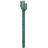
+++2
Lấy cảm hứng từ bùa Slipstream trong datapack Air Enchantments.
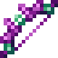
Call of The Void
Cung Tiễn Hư Không
Sát thương: Biến thiên (+8% vận tốc & sát thương) · Độ bền: 424 · Hiệu ứng Voided I
Cung tiễn thượng thừa của Hư Không. Toàn bộ mũi tên bắn ra được chuyển đổi thành **Mũi Tên Hư Không (Void Arrows)** bay nhanh hơn 8% (gây thêm 8% sát thương) và gây hiệu ứng **Voided I** làm suy giảm lượng máu tối đa của kẻ địch. Khi va chạm vào thực thể hoặc khối cứng, mũi tên sẽ **vỡ tung tóe tạo ra 9 – 11 mảnh vỡ shrapnel** bay bán kính 3.6m, mỗi mảnh gây **4 sát thương (2 tim)** diện rộng.
Cách lấy: Voided Skeleton / Altar of The AccursedCung Hư Không
++16+8
Rơi từ Voided Skeleton (tỉ lệ 0.04% – 4%) hoặc rèn tại Altar of The Accursed. Sửa độ bền trên Đe bằng Cung thường (Bow).
Shulker Tools & Weapons
Haste I Vĩnh Viễn · Đào Nhanh +20%
Bộ 6 món: Kiếm, Giáo, Rìu, Cúp, Xẻng, Cuốc · +0.5 Sát thương · Độ bền: 2701
Hệ thống vũ khí và công cụ nâng cấp hậu Rồng từ Netherite. Gồm **Kiếm Shulker, Giáo Shulker (Shulker Spear), Rìu, Cúp, Xẻng và Cuốc Shulker**. Khi cầm bất kỳ món nào trên tay, bạn sẽ nhận **hiệu ứng Haste I vĩnh viễn**, giúp tốc độ khai thác khối nhanh hơn 20%, đòn đánh nhanh hơn 10% và tăng +0.5 sát thương so với Netherite. Độ bền cực cao lên tới 2701 điểm.
Nơi rèn: Altar of The AccursedTừng món
++4
Giữ nguyên toàn bộ bùa phù phép từ công cụ Netherite ban đầu. Đạt danh hiệu Absolute Devotion khi nâng cấp cuốc Shulker Hoe.
8. Khung Vật Phẩm & Công Thức Chế Tạo: Sách Phép, Phụ Kiện & Câu Cá Hư Không
Hình ảnh Sprite gốc trích xuất từ tài nguyên chính thức của Stellarity v6 cho từng cuốn Sách Phép (Spellbooks), Phụ Kiện (Trinkets) và các loài cá đặc hữu câu được dưới vực sâu Void:
Endonomicon
Sách Hướng Dẫn Tế Đàn
Functional v6.0.0+ · Công thức Altar of The Accursed · Mở bằng cách tung qua tế đàn
Cuốn cổ thư hắc ám ghi chép toàn bộ công thức rèn nguyền rủa của tế đàn Altar of The Accursed. Tung bất kỳ cuốn sách phù phép nào qua bệ thờ để thức tỉnh nó.
NƠI MỞ KHÓA: ALTAR OF THE ACCURSED
→
Mở khóa thành tựu "An Introduction to Dark Magic".
Flavors of The Void
Mới trong v6.0.0
Sách Công Thức Nấu Vạc · Câu cá Hư Không (Void Fishing) · 42 Món Ăn & Độc Dược
Phiên bản nấu vạc của Endonomicon được bổ sung trong bản Stellarity v6.0.0! Tổng hợp danh bạ toàn bộ công thức ẩm thực, món hầm sinh tồn và độc dược điều chế bằng Hơi thở Rồng (Dragon's Breath Cauldron).
CÁCH SỞ HỮU: CÂU CÁ HƯ KHÔNG (VOID FISHING)
+
Có thể câu được ở bất kỳ biome nào tại vực Void khi sử dụng cần Fisher of Voids.
Book of Conveyance
Dịch Chuyển Tức Thời
Hồi chiêu 20s · Điều hướng bằng tầm nhìn · Bay xa không giới hạn
Phóng ra một tia sáng ma thuật dẫn đường. Người chơi có thể nghiêng đầu điều chỉnh hướng bay của tia sáng; ngay khi tia sáng va chạm khối block đầu tiên, bạn sẽ được dịch chuyển tức khắc đến tọa độ đó!
NƠI RÈN: ALTAR OF THE ACCURSED
+
16
+
32
Tuyệt phẩm di chuyển tầm xa vượt địa hình mà không gây sát thương nghẹt thở.
Book of Updraft
Bốc Lên & Lướt Gió
Bốc cao 25 blocks · Cho phép lướt gió tự do · Hồi chiêu tính sau khi chạm đất
Tạo ra luồng gió cực mạnh đẩy bổng người chơi lên không trung rồi kích hoạt trạng thái lướt gió an toàn. Thời gian hồi chiêu chỉ bắt đầu đếm sau khi bạn tiếp đất.
CÁCH LẤY: RƯƠNG THÁP END CITY HOẶC VAULT
→
Cứu nguy tức thì khi bị trượt chân rơi khỏi vách đá hoặc bờ vực Void.
Book of Light
Vùng Ánh Sáng Trị Liệu
Bán kính 8m · Hồi máu liên tục · Giảm sát thương nhận vào
Triệu hồi một vầng hào quang ánh sáng rực rỡ bảo hộ. Tất cả đồng minh đứng trong vầng sáng được hồi phục sinh lực liên tục và giảm thiểu sát thương gánh chịu.
CÁCH LẤY: RƠI TỪ EMPRESS OF LIGHT / CHAPEL OF LIGHT
→
Công cụ hỗ trợ đồng đội mạnh mẽ nhất trong các trận chiến tổ đội săn Boss.
Triệu hồi tức thì một bức tường vỏ Shulker cứng cáp trồi lên từ mặt đất, chặn đứng mọi đòn đánh tầm xa hoặc đường truy kích của quái vật để tạo đường tẩu thoát an toàn.
CÁCH LẤY: RƯƠNG VAULT HOẶC HẠ SHULKING
→
Cực kỳ hữu dụng khi cần chặn đường đàn quái vật End City áp sát.
Bắn ra một đám mây nguyền rủa đen tối lan rộng, làm suy yếu nghiêm trọng và giảm mạnh chỉ số phòng ngự của toàn bộ sinh vật bên trong phạm vi ảnh hưởng.
NƠI RÈN: ALTAR OF THE ACCURSED
+
8
+
10
Mở giao tranh hoàn hảo giúp vũ khí đồng đội gây sát thương tối đa.
Book of Return
Hồi Thành Điểm Hồi Sinh
Về điểm Spawn · Không giới hạn chiều không gian · Niệm chú an toàn
Sau một khoảng thời gian niệm chú ngắn, dịch chuyển người dùng về chính xác điểm hồi sinh (giường hoặc mỏ neo hồi sinh) bất kể bạn đang ở bất kỳ chiều không gian nào.
CÁCH LẤY: RƯƠNG TÀU BAY END SHIP / OMINOUS VAULT
→
Bảo hiểm tính mạng tuyệt đối sau các chuyến thám hiểm xa xôi ngoài Outer End.
Void Pendant (Dây Chuyền Hư Không)
Hiệu Lực Mọi Ô (Any Slot v6.0+)
Post-Dragon · Tác dụng ở mọi ô túi đồ · 9 loại ngọc khảm nguyền rủa
Trang bị phụ kiện cổ đại sau Rồng Ender. Từ bản v6.0.0+, thuộc tính của dây chuyền tự động phát huy tác dụng ở bất kỳ ô nào trong túi đồ. Khảm tại Tế đàn kết hợp 1 Mảnh Enderite + 1 trong 9 loại ngọc/khoáng sản:
Copper (Power): Đòn đánh phóng tia sét điện giật phụ trội gây thêm sát thương.
Diamond (Furor): +6% Tốc độ đánh nhân bội.
Emerald (Fortune): +1 Điểm may mắn Luck.
Gold (Spelunking): +15% Tốc độ đào & +5% Hiệu suất đào mỏ.
Iron (Fortitude): +1 Độ cứng giáp Armor Toughness.
Lapis (Wisdom): 5% tỉ lệ rơi hạt EXP khi nhận sát thương từ thực thể.
Netherite (Rage): +2 Sát thương cận chiến & +35% Tỉ lệ chém quét.
Quartz (Agility): +4% Tốc chạy, +4% Sức nhảy & +40% Hiệu quả di chuyển.
NƠI RÈN: ALTAR OF THE ACCURSED
++
Dây chuyền cơ bản tìm thấy trong rương Khảo cổ xác tàu đắm (Shipwreck Archaeology).
Satchel of Voids
Bệ Thờ Altar Di Động
Triệu hồi Altar di động 32.5s (Hồi chiêu 30s) · Gắn lên Crying Obsidian tạo Altar vĩnh viễn
Túi phép thuật cho phép truy cập Bệ thờ Altar of The Accursed từ bất kỳ đâu trên thế giới. Nhấp chuột phải lên mặt đất để vẽ ấn chú triệu hồi một bệ thờ Altar di động tồn tại trong 32.55 giây (có thể triệu hồi lại sau 30 giây). Đặc biệt: Đặt túi vào Khung Vật Phẩm gắn bên cạnh một khối Crying Obsidian (Hắc Diện Thạch Khóc) sẽ biến khối đá thành một Bệ Thờ Altar of The Accursed vĩnh viễn tại căn cứ của bạn (có thể đập ra để thu hồi cả túi và khối đá bất kỳ lúc nào).
NƠI RÈN: ALTAR OF THE ACCURSED
+
64
+
64
+
4
+
2
Cho phép rèn toàn bộ trang bị Endgame tại căn cứ Overworld mà không cần phải quay lại đảo The End.
Enderman's Hand
+3 Tầm Với Khối Block
Tăng +3 khối cự ly tương tác · Rơi 10% từ Enderman (Looting tăng tỉ lệ)
Cánh tay thuôn dài thần bí của Enderman. Khi cầm trên bất kỳ tay nào (tay chính hoặc tay phụ), ban tặng khả năng tăng thêm +3 khối tầm tương tác (Block Reach), cho phép người chơi đào phá, đặt khối hoặc tương tác với rương và công tắc từ cự ly xa hơn 3 khối.
CÁCH LẤY: HẠ GỤC ENDERMAN
➜
Tỉ lệ rơi 10% từ Enderman ở Overworld và The End, bùa Nhặt (Looting) tăng thêm tỉ lệ rơi.
Life Crystal
Hồi Máu Cấp IV Tốc Hành
Đứng yên hồi máu tối đa Regeneration IV · Rơi 66% từ Ender Dragon
Trang sức kết tinh sức mạnh sinh mệnh của Rồng Ender (trước đây là Ender Insignia). Khi cầm trên tay và đứng yên hoàn toàn, kích hoạt hiệu ứng Hồi Phục (Regeneration I), cấp độ hiệu ứng tăng dần mỗi 2 giây và đạt đỉnh ở Regeneration IV. Di chuyển hoặc nhận sát thương sẽ lập tức làm mới và tạm ngắt 0.5s.
CÁCH LẤY: HẠ GỤC ENDER DRAGON
➜
Tỉ lệ rơi 66% từ Rồng Ender khi bị tiêu diệt. Cực kỳ hiệu quả để đứng yên hồi đầy bình máu tức thì trong giao tranh.
Khiên phòng hộ phản đòn trứ danh sau khi diệt Rồng. Chặn sát thương sẽ tích lũy một phần lực đánh, cộng thêm +15% sát thương vào đòn đánh cận chiến kế tiếp (cộng dồn tối đa 3 tầng lên tới +45%, duy trì trong 2.5 giây). Đặc biệt: Khi chặn cú bổ từ Rìu (Axe), khiên kích hoạt vụ nổ diện rộng 4 khối gây 14 sát thương và gây hiệu ứng Jinx trong 8 giây (bào mòn Giáp & Độ cứng giáp), đồng thời ngay lập tức sạc đầy 3 tầng sát thương (+45%) cho đòn phản công! Miễn nhiễm hoàn toàn với Lửa và Dung Nham.
NƠI RÈN: ALTAR OF THE ACCURSED
++
Khắc chế triệt để lối đánh bằng Rìu (Axe PvP). Có thể nâng cấp bùa chú Unbreaking & Mending trên Đe.
Copper Elektra Shield
Mới trong v6
Khiên Lướt Điện Bọc Đồng · Ngồi (Sneak) Lướt Tốc Độ Cao · Tối Đa 3 Lần Lướt
Khiên bọc đồng tĩnh điện. Ngồi rón rén (Sneak) để kích hoạt cú lướt điện giật tốc độ cao! Tích lũy tối đa 3 lần lướt mỗi 8 giây (lần thứ 3 hồi chậm hơn). Đặc biệt: Lướt xuyên qua quái vật sẽ giảm ngay 50% thời gian hồi chiêu!
CÁCH LẤY: RƯƠNG VAULT THÁP END CITY / TẾ ĐÀN
+
8
+
2
Khiên cơ động tốc độ cao lý tưởng để băng qua chiến trường.
Chặn sát thương sẽ khiến hàng loạt ngôi sao băng rực lửa rơi xuống nghiền nát kẻ tấn công và gây hiệu ứng Cháy Lăng Kính. Khi kết hợp với Radiant Jewel, sao sẽ rơi nhiều hơn, sát thương lớn hơn và chuyển thành Lửa Thánh (Holy Flames) thiêu đốt xuyên Kháng Lửa!
CÁCH LẤY: RƠI TỪ EMPRESS OF LIGHT
→
Tương tác hoàn hảo cùng Radiant Jewel để tối đa hóa sát thương phản đòn.
Soaring Insignia
Huy Hiệu Bay Vĩnh Cửu
Bay vô tận không cần pháo hoa · Tăng tốc Elytra +100% · Giữ thăng bằng trên không
Huy hiệu rơi khi hạ Empress of Light ban ngày. Cho phép bay lượn liên tục không cần pháo hoa, tăng gấp đôi vận tốc bay của cánh Elytra và giữ thăng bằng trên không.
CÁCH LẤY: HẠ EMPRESS OF LIGHT BAN NGÀY
→
Cung cấp khả năng bay lơ lửng và cơ động trên không trung.
Radiant Jewel
Mới trong v6.0.0
Có tác dụng ở mọi ô túi đồ · Cường hóa 5 món rơi từ Empress of Light · Rơi 100% từ Radiant Empress
Bảo ngọc trong bản cập nhật v6.0.0, rơi khi tiêu diệt biến thể Radiant Empress of Light. Chỉ cần giữ ngọc trong túi đồ để mở khóa sức mạnh tiềm ẩn của toàn bộ 5 món bảo vật Nữ đế:
Kaleidoscope: 50% cơ hội giảm thời gian gồng đòn thêm 1 giây.
Fluffy Hammer of Justice: Tăng gấp đôi (2x) tốc độ bay của búa ném!
Prismatic Punch: Nhân đôi số lần phát nổ Prismatic Blast!
Prismember: Giảm thời gian hồi chiêu giữa các đòn xoay lửa 360°!
Starstruck Shield: Triệu hồi thêm sao rơi với sát thương cao hơn và thiêu đốt bằng Lửa Thánh (Holy Flames) xuyên kháng lửa!
CÁCH SỞ HỮU: ĐÁNH BẠI RADIANT EMPRESS OF LIGHT (100% DROP)
+→→
Rơi 100% từ biến thể Radiant Empress of Light (850 HP) triệu hồi bằng nghi lễ đặc biệt.
Prismatic Pearl
Ngọc Ender Vô Hạn
Bay nhanh & xa +25% · Vệt Cầu Vồng · Hồi sau 5s · Cooldown độc lập
Ngọc Prismatic Pearl đóng vai trò như nguồn ngọc Ender vô tận. Ném đi bay nhanh hơn 25% và xa hơn 25% kèm vệt cầu vồng lộng lẫy; sau 5 giây ngọc tự bay hồi lại về tay!
CÁCH LẤY: RƠI TỪ EMPRESS OF LIGHT
→
Không làm tổn hại lượng máu khi tiếp đất nếu được nâng cấp bùa dịch chuyển an toàn.
Duskberry
Trái Cây Hoàng Hôn
Hồi 8 Độ đói · Buff Kháng sát thương & Nhìn đêm · Cây bụi vùng End
Quả mọng mọc trên các bụi cây tại quần xã The End. Khi ăn hồi phục 8 độ đói, nhận hiệu ứng Kháng cự (Resistance) và Nhìn trong đêm (Night Vision).
CÁCH LẤY: HÁI TỰ NHIÊN NGOÀI END SHRUBLAND
→
1-3
Lương thực sinh tồn cơ bản tuyệt hảo khi lang thang ngoài các đảo xa.
Fisher of Voids
Cần Câu Hư Không
Câu cá dưới vực sâu y < 0 · Tương thích mồi Decayed Clover
Cần câu đặc chế câu trực tiếp dưới vực Void trống rỗng ở tọa độ $y < 0$. Kết hợp cùng Cỏ Bốn Lá Hư Hao (Decayed Clover) để câu các loài cá thần bí và sách cổ Flavors of The Void.
NƠI RÈN: ALTAR OF THE ACCURSED
+
2
+
Vật phẩm khởi đầu cho chuỗi tính năng Câu cá Hư Không (Void Fishing).
Crystal Heartfish
Cá Tăng Máu Vĩnh Viễn
Tối đa 10 con (+5 Tim đỏ vĩnh cửu) · Thành tựu "Topped Off"
Loài cá quý hiếm nhất câu được từ Void. Mỗi lần ăn tăng vĩnh viễn 1 HP tối đa (nửa tim). Cho phép tích lũy tối đa 10 con (+5 trái tim đỏ đầy đủ)!
CÁCH LẤY: CÂU CÁ HƯ KHÔNG VỚI DECAYED CLOVER
→
Ăn đủ 10 con mở thành tựu "Topped Off". Giới hạn chuẩn trong Stellarity là +10 HP (5 tim).
Prismite
Cá Lăng Kính Đổi Màu
Nguyên liệu ẩm thực cao cấp · Chế tạo Prismatic Sushi & Độc dược vạc
Cá thần sắc màu óng ánh phát sáng rực rỡ. Dùng để nấu món Prismatic Sushi hồi máu tức thì hoặc điều chế các loại độc dược vạc cao cấp như Regeneraga và Lifeforce.
CÁCH LẤY: CÂU CÁ HƯ KHÔNG TẠI THE HALLOW
→
Nguyên liệu cốt lõi cho các bài thuốc cao cấp nhất trong vạc Hơi thở Rồng.
Ender Koi
Cá Chép End
Nguyên liệu Sushi truyền thống · Dịch chuyển nhẹ khi ăn
Cá chép bóng đêm sống trôi nổi trong không gian Void. Dùng trong công thức chế biến Sushi cổ điển cùng Rong biển khô trong nồi vạc Hơi thở Rồng.
CÁCH LẤY: CÂU CÁ HƯ KHÔNG TẠI MỌI BIOME END
→
Món ăn truyền thống của các cư dân sinh sống tại các ngôi làng End.
9. Khung Nấu Vạc: Thực Phẩm & Ẩm Thực Sinh Tồn (Cauldron Crafting)
Hệ thống nấu nướng sinh tồn đặc trưng của Stellarity sử dụng Vạc Nước Kích Hoạt Bằng Hơi Thở Rồng (Dragon's Breath Cauldron):
Quy tắc nấu vạc:
Năng Lượng Vạc: Đổ đầy nước vào Vạc rồi ném 1x Dragon's Breath. Mỗi bình cho phép nấu tối đa 7 lần trước khi cần nạp thêm bình mới.
Số Lượng Chính Xác (Exact Amount): Phải thả chính xác số lượng nguyên liệu yêu cầu. Thừa dù chỉ 1 vật phẩm công thức cũng sẽ không hoạt động.
Thu Hồi Đồ Nấu: Bạn có thể chuột phải vào vật phẩm đang nổi lơ lửng trong vạc để lấy lại vào túi đồ bất kỳ lúc nào nếu ném nhầm.
Lưu Ý Tro Tinh Tú (Starlight Soot): Với mọi công thức có Starlight Soot, bắt buộc phải thả Soot vào CUỐI CÙNG, nếu thả sớm vạc sẽ biến thành nước The Hallow (Consecration) và làm mất công thức nấu thuốc!
Golden Chorus Fruit
Dịch Chuyển 2500m
Chi phí Vạc: 3 Dragon's Breath · Nguyên liệu nấu Phở
Ăn vào sẽ dịch chuyển ngẫu nhiên người chơi tới một mặt đất an toàn trong bán kính 2500 blocks. Đây cũng là nguyên liệu bắt buộc để nấu món Phở (Pho).
Nơi nấu: Breath CauldronTốn 3 Breath
+
Cũng có 14% tỉ lệ mở ra từ rương End City.
Thịt Enderman Nướng (Grilled Enderman's Flesh)
Thực Phẩm Sinh Tồn
Nấu Lò / Vạc: 1 Dragon's Breath · Nguyên liệu nấu Phở
Thịt Enderman tươi sau khi nướng chín thơm ngậy, loại bỏ hoàn toàn độc tố và tác dụng phụ dịch chuyển lung tung. Cung cấp 8 điểm thức ăn (4 đùi) và độ bão hòa ổn định. Là nguyên liệu cốt lõi để nấu món Phở (Pho).
Cách chế biến: Lò Nướng / Vạc Nước1 Breath hoặc Lò Than
nướng chín ➜
Thịt Enderman sống rơi khi tiêu diệt Enderman tại mọi quần xã.
Phở (Pho)
Thức Ăn Hồi Phục Đỉnh
Chi phí Vạc: 4 Dragon's Breath · Hồi trọn vẹn thức ăn
Tô phở ấm nóng nấu trực tiếp trong Vạc Hơi Thở Rồng. Hồi phục 10 đùi thức ăn, cấp độ bão hòa (Saturation) cực cao và hiệu ứng hỗ trợ thể lực trước khi đánh Boss.
Món bánh nướng thịt chăn cừu dinh dưỡng. Cấp lượng Máu hấp thụ (Absorption) và giữ thanh thức ăn không bị tụt trong suốt thời gian dài thám hiểm đảo ngoài.
Nơi nấu: Breath CauldronTốn 5 Breath
+++2
Shulker Body thu được khi hạ Shulker bằng vũ khí Looting.
Chorus Stew
Súp Quả Chorus
Chi phí Vạc: 2 Dragon's Breath · Ăn không bị dịch chuyển
Món súp hầm từ Quả và Hoa Chorus. Khác với ăn quả Chorus sống, ăn món súp này sẽ không làm bạn bị dịch chuyển ngẫu nhiên, rất an toàn khi dùng gần mép Void.
Nơi nấu: Breath CauldronTốn 2 Breath
++
Hồi phục 6 đùi thức ăn và bổ sung nước cho nhân vật.
Chorus Pie
Bánh Nướng Chorus
Chi phí Vạc: 2 Dragon's Breath · Bánh ngọt End
Bánh ngọt chế biến từ Quả Chorus, Đường và Trứng Ender. Dễ mang theo từng xấp nhỏ khi di chuyển xa, hồi phục thể trạng nhanh chóng.
Nơi nấu: Breath CauldronTốn 2 Breath
++
Ender Egg có thể kiếm từ cấu trúc tổ quái The Nest.
Sushi (Ender Koi)
Sushi Void Cổ Điển
Chi phí Vạc: 1 Dragon's Breath · Ăn cực nhanh
Cuộn cơm sushi làm từ cá chép Ender Koi câu ở vùng Void. Thời gian ăn nhanh gấp đôi thịt nướng thường, hồi máu và thanh thức ăn nhanh chóng.
Nơi nấu: Breath Cauldron1 Breath
+
Món ăn chế biến nhanh nhất từ cá câu được tại The End.
Prismatic Sushi
Sushi Cá Prismite
Chi phí Vạc: 2 Dragon's Breath · Hồi phục & Phát quang
Cuộn sushi làm từ cá Prismite tại hồ The Hallow. Ăn vào cho hiệu ứng Glowing (phát quang xuyên tường) và tăng tốc độ di chuyển trong thời gian ngắn.
Nơi nấu: Breath Cauldron2 Breath
+
Món ăn cao cấp cho người câu cá tại quần xã The Hallow.
Candied Chorus Fruit (Kẹo Chorus)
Món Ngọt The End
Hồi 4 Điểm Đói (2 Đùi Gà) · Hồi Độ Bão Hòa Nhanh
Quả Chorus được ướp lớp đường ngọt thanh trong vạc nước ấm. Vị ngọt giúp khóa chặt tính năng dịch chuyển bất định của quả Chorus thô, nên ăn không bị dịch chuyển.
Nơi nấu: Breath Cauldron1 trong 7 Lần Nấu
+2
Món ăn chế biến nhanh, tiện lợi mang theo khi chu du qua các cụm đảo End.
Fried Chorus Fruit (Chorus Chiên)
Món Chiên Giòn
Hồi 6 Điểm Đói (3 Đùi Gà) · Hồi 7.2 Điểm Bão Hòa
Quả Chorus bọc bột lúa mì được chiên vàng giòn trong vạc nhờ sức nóng từ bột quỷ lửa. Đem lại lượng dinh dưỡng dồi dào và khử bỏ hoàn toàn tính chất dịch chuyển của quả thô.
Nơi nấu: Breath Cauldron1 trong 7 Lần Nấu
++
Lựa chọn thực phẩm tích trữ chiến đấu thay thế thịt bò nướng hiệu quả.
Frozen Carpaccio (Gỏi Enderman Băng)
Đặc Sản Frosted Hills
Hồi Máu Tức Thì · Kháng Lạnh Giá Buốt
Thịt Enderman tươi được thái lát mỏng và ướp đá lạnh giá buốt trong vạc. Nhiệt độ âm sâu triệt tiêu độc tố Hư Không, biến món ăn thành liều thuốc giải cứu người chơi khỏi cơn giá lạnh.
Nơi nấu: Breath Cauldron1 trong 7 Lần Nấu
+
Món khai vị đặc sắc của người thám hiểm các đới tuyết Frosted Hills.
Chorus Juice (Nước Ép Chorus)
Đồ Uống Giải Khát
Hồi 4 Điểm Đói · Thời Gian Uống Siêu Nhanh
Nước ép thanh mát chiết xuất từ 2 quả Chorus tươi. Khác với đồ ăn thông thường, bình nước ép này có thể uống với tốc độ cực nhanh ngay trong lúc đang di chuyển hoặc né đòn.
Nơi nấu: Breath Cauldron1 trong 7 Lần Nấu
2+
Sau khi uống sẽ trả lại 1 chai thủy tinh rỗng vào túi đồ.
Bottle o' Enchanting (Chai Kinh Nghiệm)
Chiết Xuất Ma Lực Vạc
Giải phóng 3 – 11 Điểm Kinh Nghiệm (XP) khi Ném
Bằng cách hòa tan quặng Ngọc Lưu Ly cùng ma thuật Hơi Thở Rồng vào chai thủy tinh rỗng, người chơi có thể tự sản xuất chai điểm kinh nghiệm vô hạn để sửa trang bị Mending hoặc ép sách bùa chú.
Nơi nấu: Breath Cauldron1 trong 7 Lần Nấu
+2
Cách hiệu quả nhất để dự trữ và đóng chai điểm kinh nghiệm dư thừa.
10. Khung Đun Thuốc: Thuốc Vạc & Độc Dược Đặc Chế
Hệ thống 12 dòng thuốc và độc dược đặc chế trong Vạc Hơi Thở Rồng (Breath Cauldron Crafting) từ tệp lệnh checks.mcfunction của Stellarity. Mỗi loại thuốc được tinh chế từ thủy sản Void, khoáng thạch End và dược liệu Nether, hiển thị đầy đủ công thức (văn bản kèm texture trực quan) và hiệu ứng chi tiết nhận được sau khi uống:
Lưu ý khi nấu thuốc:
Năng Lượng Vạc: Ném 1x Dragon's Breath vào vạc nước đầy sẽ cho phép nấu tối đa 7 bình thuốc trước khi vạc cạn ma lực.
Nâng Cấp Thuốc: Thuốc nấu xong có thể thả ngược lại vào vạc cùng 1x Redstone Dust để tạo bản Extended (Kéo dài thời gian), hoặc 1x Glowstone Dust để nâng lên Cấp II (Tăng cường hiệu lực).
Quy Tắc Thả Starlight Soot: Đối với các công thức có Starlight Soot (như Lifeforce, Regeneraga II, Royal Jelly), bắt buộc phải thả Soot vào CUỐI CÙNG. Nếu thả Soot trước khi cho chai thủy tinh/nguyên liệu khác, vạc sẽ tự chuyển sang chế độ Thánh Hóa Consecration và hủy công thức!
Blind Rage Potion
Sức Mạnh III & Bóng Tối
Chi phí Vạc: 2 Dragon's Breath · Cấp độ: Sức Mạnh III · Thời gian: 15 giây
Cường hóa cơn cuồng nộ tột độ trong chiến trận: Tăng thêm +9 sát thương cận chiến (Strength III) nhưng đồng thời áp đặt hiệu ứng Bóng Tối (Darkness) làm co hẹp tầm nhìn trong 15 giây. Thích hợp dồn sát thương kết liễu quái vật lớn trong tích tắc.
Nơi nấu: Breath CauldronTốn 2 Breath
+++
Nâng cấp dạng kéo dài (Ext): Đun tiếp với 1x Redstone (tốn thêm 1 Dragon's Breath).
Endurance Potion
Giảm Sát Thương 20% – 40%
Chi phí Vạc: 2 Dragon's Breath · Kháng Cự I / II · Thời gian: 2:00
Tạo lớp giáp sinh lực vô hình bao bọc cơ thể: Cung cấp hiệu ứng Kháng cự (Resistance I) trong 2 phút, giảm trực tiếp 20% mọi sát thương nhận vào từ quái vật, dung nham và va chạm. Uống trước khi đối đầu Boss để tránh bị sốc sát thương chết bất đắc kỳ tử.
Nơi nấu: Breath CauldronTốn 2 Breath
+++
Đun với Redstone để kéo dài thời gian (Ext, 3B) hoặc với Glowstone Dust để nâng lên Resistance II giảm 40% sát thương (3B).
Entanglement Potion
Trói Chân & Làm Chậm V (Splash)
Chi phí Vạc: 2 Dragon's Breath · Dạng Ném (Splash Potion) · Thời gian: 11 giây
Bình thuốc ném khống chế diện rộng: Khi va chạm mặt đất sẽ giải phóng năng lượng dây leo gai góc, làm quái vật và kẻ địch dính Làm chậm V (Slowness V) trong 11 giây. Giảm 75% tốc độ chạy khiến mục tiêu gần như đứng yên.
Nơi nấu: Breath CauldronTốn 2 Breath
+++
Có thể đun thêm Redstone (kéo dài thời gian) hoặc Glowstone Dust (tăng cường độ làm chậm) với chi phí 3 Dragon's Breath.
Frost Cloud Potion
Mây Băng Đóng Băng Khu Vực (Lingering)
Chi phí Vạc: 4 Dragon's Breath · Dạng Mây Tồn Lưu (Lingering) · Slowness Cấp 100
Ném ra tạo đám mây sương tuyết cuộn xoáy tồn lưu trong 6 giây. Bất kỳ thực thể nào bước vào sẽ phải chịu Làm chậm Cấp 100, hoàn toàn bị đóng băng bất động tại chỗ trong thời gian hiệu lực.
Nơi nấu: Breath CauldronTốn 4 Breath
++2+
Chế tạo từ loài cá Frost Minnow độc hữu câu được tại các đới tuyết Frosted Hills The End.
Hellfire Treader Potion
Kháng Lửa & Tốc Chạy 4 Phút
Chi phí Vạc: 2 Dragon's Breath · Speed + Fire Resistance · Thời gian: 4:00
Thuốc bước chân dung nham (Hellfire Treader): Kích hoạt đồng thời hiệu ứng Kháng Lửa (Fire Resistance) và Tốc độ Chạy (Speed) liên tục trong 4 phút (4800 ticks). Cho phép người uống di chuyển tốc độ cao qua các hồ dung nham rực lửa ở Nether và pháo đài Piglin an toàn.
Nơi nấu: Breath CauldronTốn 2 Breath
+++
Có thể nâng cấp kéo dài thời gian với Redstone (3B) hoặc nâng lên Speed II với Glowstone Dust (3B).
Lifeforce Potion
Tăng +10 Đến +20 (+20 Đến +40 HP)
Chi phí Vạc: 3 Dragon's Breath · Health Boost I / II · Thời gian: 3:00
Dược phẩm gia tăng lượng sinh mệnh cốt lõi: Cung cấp hiệu ứng Gia Tăng Máu Tối Đa (Health Boost) trong 3 phút. Cấp I bổ sung ngay 2 hàng tim đỏ (+20 HP); Cấp II bổ sung 4 hàng tim đỏ (+40 HP), biến nhân vật thành pháo đài sống trước đòn quét của Boss Jean.
Nơi nấu: Breath CauldronTốn 3 Breath
+++
Đun tiếp với Glowstone Dust (tốn 3 Dragon's Breath) để đạt cấp độ Health Boost II tối đa.
Spelunker Potion
Tầm Nhìn Đêm & Đào Siêu Tốc
Chi phí Vạc: 2 Dragon's Breath · Night Vision + Haste · Thời gian: 3:00
Bình thuốc khai khoáng: Cung cấp hiệu ứng Tầm nhìn Đêm (Night Vision) kết hợp Vội Vã (Haste) gia tăng tốc độ đào quặng dưới lòng đất.
Nơi nấu: Breath CauldronTốn 2 Breath
+++
Có thể dùng Nấm Nâu hoặc Nấm Đỏ. Đun với Redstone để kéo dài hoặc Glowstone để lên Haste II.
Luck Potion
Tăng Tỉ Lệ Rơi Đồ Hiếm
Chi phí Vạc: 5 Dragon's Breath · Thuộc tính May Mắn · Thời gian: 5:00
Ban phúc khí cát tường cho người sở hữu: Cung cấp chỉ số May Mắn (Luck +1) trong 5 phút. Tăng vọt xác suất câu trúng bảo vật quý hiếm ở The Void, cải thiện phẩm cấp đồ khi mở Purpur Vault tại End City và gia tăng tỉ lệ rơi ngọc/vũ khí từ quái vật.
Nơi nấu: Breath CauldronTốn 5 Breath
++2+
Dược phẩm cao cấp yêu cầu 1 viên Kim Cương và 5 bình Dragon's Breath để hoàn tất quy trình.
Poseidon's Nectar
Bá Chủ Thủy Cung 6 Phút 30 Giây
Chi phí Vạc: 6 Dragon's Breath · 3 Hiệu Ứng Thủy Sinh · Thời gian: 6:30
Mật ngọt của thần biển Poseidon: Cấp đồng thời 3 quyền năng đại dương kéo dài 6 phút 30 giây: Sức mạnh Ống Dẫn (Conduit Power) (thở vĩnh viễn và nhìn xuyên làn nước sâu), Máu hấp thụ (Absorption) và Ân Huệ Cá Heo (Dolphin's Grace) (bơi lướt nhanh gấp 3 lần bình thường).
Nơi nấu: Breath CauldronTốn 6 Breath
++++
Thuốc chuyên dụng để thám hiểm Đền thờ Đại Dương (Ocean Monument) và khám phá mạch nước ngầm.
Red Potion
Độc Dược 12 Hiệu Ứng Bất Lợi
Chi phí Vạc: 7 Dragon's Breath · Cảnh báo: Nguy hiểm tính mạng · Thời gian: Vĩnh viễn
Bình thuốc đỏ hắc ám với lời nhắn 'Cứ uống đi, làm sao mà chết được?': Áp đặt lập tức 12 hiệu ứng bất lợi Cấp 10 vĩnh viễn (Bóng tối, Chậm chạp, Đào chậm, Chóng mặt, Mù lòa, Đói khát, Yếu ớt, Trúng độc, Khô héo Wither, Phát quang, Xui xẻo) kèm Điềm Xấu (Bad Omen)! Chỉ có thể giải bằng Sữa Bò hoặc Royal Jelly.
Nơi nấu: Breath CauldronTốn 7 Breath
+++++
Thuốc độc thử thách độ bền bỉ hoặc dùng trong các minigame bẫy sinh tồn của máy chủ.
Regeneraga
Hồi Máu Ngay Lập Tức (Instant Health II)
Chi phí Vạc: 4 Dragon's Breath · Instant Health II + Regen III · Cấp Tốc Cứu Sinh
Bình thuốc cứu tử trong gang tấc: Bơm đầy ngay lập tức 4 (Instant Health II) và tiếp tục kích hoạt hiệu ứng Hồi Phục III (Regeneration III) trong 7 giây. Nâng cấp lên Cấp II giúp kéo dài thời gian hồi phục, là vật phẩm sống còn khi đấu kiếm PvP sinh tử.
Nơi nấu: Breath CauldronTốn 4 Breath
+++++
Đun tiếp với 1x Muội Tinh Tú (Starlight Soot) để nâng cấp lên Regeneraga II (tốn thêm 4 Dragon's Breath).
Royal Jelly (Mật Ong Hoàng Gia)
Thanh Tẩy Toàn Bộ 11 Hiệu Ứng Xấu
Chi phí Vạc: 5 Dragon's Breath · Tiêu thụ siêu tốc 1.5s · Giải Trừ Lời Nguyền
Thánh dược thanh tẩy cao quý nhất The End: Uống siêu nhanh trong 1.5 giây, hồi 6 đùi thức ăn, cấp Máu hấp thụ (Absorption) trong 1 phút và XÓA SẠCH HOÀN TOÀN TẤT CẢ 11 HIỆU ỨNG BẤT LỢI trên cơ thể (Wither, Điềm Xấu, Độc tố, Mù lòa, Suy yếu, Chậm chạp, Buồn nôn, Khô héo). Khắc tinh số 1 của Boss Wither và Red Potion!
Nơi nấu: Breath CauldronTốn 5 Breath
++2
Đun tiếp với Muội Tinh Tú (tốn 3 Dragon's Breath) để nâng cấp lên Royal Jelly II duy trì lớp bảo hộ dài hơn.
11. Bản Quyền Tác Giả & Nguồn Dữ Liệu Chính Thức
Thông số trang bị, công thức tệp lệnh .mcfunction và hình ảnh minh họa trên trang này thuộc về dự án Stellarity:
Thông tin Bản quyền Stellarity (Copyright & Attribution)
Tác giả & Nhóm phát triển: Phát triển chính bởi kohara (trước đây là FokaStudio's Ender Expansion, bắt đầu từ bản port của Far End do Hex tạo), hiện được duy trì bởi nhóm Prismatic Shards / Void Realms.
Bản quyền Hình ảnh & Texture: Ảnh chụp khung cảnh in-game thuộc bản quyền của Dat1Mexican, Opliz, kohara và BananaKingXO. Icon dự án bởi MidasDaEpik; họa sĩ vẽ Sprite vật phẩm gồm kohara và YaGirlGiulles.
Giấy phép sử dụng (License): Phát hành công khai trên Modrinth và GitHub, cho phép sử dụng trên máy chủ Minecraft kèm ghi nhận tác giả.